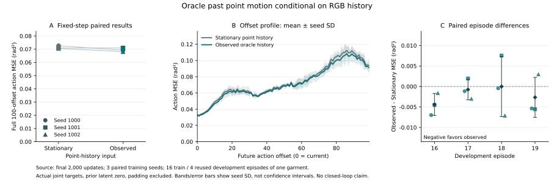

<!doctype html><html lang="zh-CN"><meta charset="utf-8"><meta name="viewport" content="width=device-width,initial-scale=1">
<title>Flow action interface · experiment</title><style>
:root{color-scheme:light;--ink:#192b32;--muted:#556a72;--line:#d6dfe2;--accent:#126d72;--soft:#f2f6f5;--paper:#fff}*{box-sizing:border-box}body{margin:0;background:var(--paper);color:var(--ink);font:16px/1.7 system-ui,sans-serif}main{max-width:1080px;margin:auto;padding:28px 24px 70px}nav{display:flex;justify-content:space-between;gap:12px;flex-wrap:wrap;font-size:14px}a{color:var(--accent)}button,select{font:inherit;border:1px solid var(--line);border-radius:4px;padding:5px 12px;background:white;color:var(--ink);cursor:pointer}h1{font-size:30px;line-height:1.35;margin:30px 0 12px;max-width:850px}h2{font-size:22px;margin:30px 0 10px}p{margin:10px 0}.muted,small{color:var(--muted)}.lead{font-size:19px}.callout{border-left:4px solid var(--accent);padding:10px 18px;background:var(--soft)}.stats{display:flex;gap:32px;flex-wrap:wrap;margin:20px 0}.stats b{display:block;font-size:25px}.stats span{font-size:14px;color:var(--muted)}table{border-collapse:collapse;width:100%;font-size:14px}th,td{padding:9px 10px;text-align:left;border-bottom:1px solid var(--line)}th{font-weight:600;background:var(--soft)}.scroll{overflow-x:auto}progress{width:125px;accent-color:var(--accent)}.controls{display:flex;gap:14px;align-items:center;flex-wrap:wrap;margin:12px 0}.plot{width:100%;height:auto;border:1px solid var(--line)}.figure{overflow-x:auto}.figure svg{min-width:650px}details{border-top:1px solid var(--line);padding:12px 0}summary{cursor:pointer;font-weight:600}.note{font-size:14px}footer{border-top:1px solid var(--line);margin-top:30px;padding-top:15px;font-size:14px}svg text{font:13px system-ui,sans-serif;fill:var(--muted)}svg .title{font-size:15px;fill:var(--ink)}@media(max-width:600px){main{padding:18px 15px}h1{font-size:26px}.stats{gap:18px}th,td{padding:7px}}
</style><main><nav><a href="../../flow-usage/" id="survey"></a><button id="language">English</button></nav><div id="app"></div></main>
<script>const D={"updated_utc": "2026-10-20T02:00:12.640778+00:00", "checks": {"passed": true, "check_count": 40, "scope": "Original interface checks plus encoding-matched motion-control checks"}, "smoke": {"status": "complete", "steps": 2, "completed": ["late-geometry-seed-1000", "late-tracks-seed-1000"]}, "runs": [{"name": "late-static-seed-1000", "seed": 1000, "mode": "static", "fusion": "late", "validation": {"overall": {"MSE_rad2": 0.07264588328539921, "MAE_rad": 0.1611785085603906, "valid_scalar_actions": 433596, "windows": 427, "MSE_per_joint_rad2": [0.028857657903072525, 0.1178941903771663, 0.1857533715826384, 0.02277360699383412, 0.023444706285937714, 0.028171257237632908, 0.06643606051644178, 0.14063927184971725, 0.18973932661799692, 0.020088016513584616, 0.005626551559042438, 0.04232658198775521], "MSE_per_offset_rad2": [0.03211530151795557, 0.0320555417593359, 0.033453988485927406, 0.032006978068437206, 0.036701286415083224, 0.0375219304439587, 0.039363327536473355, 0.0424813100814583, 0.04440389930641295, 0.048181406692169866, 0.0501840606720685, 0.051915385315651166, 0.05290070387154982, 0.0567225765322265, 0.0577571468165427, 0.06414457253125799, 0.06230774125618844, 0.06456081369051632, 0.06852577460131144, 0.06987322630969836, 0.0682565779781219, 0.06788270963543178, 0.06606701052997381, 0.07051215116923655, 0.06926501479457314, 0.06616151980215278, 0.06881813078921181, 0.06923212080808991, 0.06821596619477407, 0.06982941707349632, 0.06715267997902233, 0.06210133531367467, 0.05915637896334891, 0.0643123384071484, 0.059822798523892655, 0.05903089685175529, 0.05875493672181187, 0.06098298201175983, 0.06296695522962807, 0.06420901969251362, 0.06578541352870106, 0.06570314588323725, 0.06473510433732745, 0.06397142929577361, 0.06806197710259078, 0.06962360692303435, 0.0662769975493648, 0.06854890015134665, 0.0683520976196881, 0.07037705195868944, 0.07045471979852494, 0.06993172999303104, 0.0739517934457143, 0.07025067403790312, 0.07584303537770133, 0.0711004818564297, 0.07107645169085912, 0.07582407737063684, 0.07853095365827492, 0.07788012179095365, 0.07787708309890007, 0.07469785926678991, 0.08173934994616024, 0.07966023068480726, 0.08147500369622977, 0.08261984237926709, 0.08031348512991444, 0.08237425702032213, 0.08134551719595351, 0.08096824533122592, 0.08387624042421715, 0.08326388663447198, 0.08542502425225629, 0.082664341251963, 0.08702078168317023, 0.0873156272060919, 0.08885628343426552, 0.09400766995554796, 0.09197481749802806, 0.09349654743531327, 0.09818606694622325, 0.09754523621495276, 0.09814592605312573, 0.09426954127939928, 0.10780383915124937, 0.09988377055603892, 0.10905215545101732, 0.10435799254779249, 0.11231308378558064, 0.11228710279986712, 0.1075944153846643, 0.10681264684553635, 0.10868751744269342, 0.11040907914782185, 0.10988597632215967, 0.10963836373298144, 0.10994037679002203, 0.09900451447263407, 0.10030352064838886, 0.1034938149287367], "valid_scalar_actions_per_offset": [5124, 5124, 5088, 5076, 5076, 5040, 5028, 5028, 4992, 4980, 4980, 4944, 4932, 4932, 4896, 4884, 4884, 4848, 4836, 4836, 4800, 4788, 4788, 4752, 4740, 4740, 4704, 4692, 4692, 4656, 4644, 4644, 4608, 4596, 4596, 4560, 4548, 4548, 4512, 4500, 4500, 4464, 4452, 4452, 4416, 4404, 4404, 4368, 4356, 4356, 4320, 4308, 4308, 4272, 4260, 4260, 4224, 4212, 4212, 4176, 4164, 4164, 4128, 4116, 4116, 4080, 4068, 4068, 4032, 4020, 4020, 3984, 3972, 3972, 3936, 3924, 3924, 3888, 3876, 3876, 3840, 3828, 3828, 3792, 3780, 3780, 3744, 3732, 3732, 3696, 3684, 3684, 3648, 3636, 3636, 3600, 3588, 3588, 3552, 3540], "MSE_prefix_rad2": {"1": 0.032115301517955594, "10": 0.03778031258273442, "100": 0.07264588328539921}}, "episodes": {"16": {"MSE_rad2": 0.09145308541654322, "MAE_rad": 0.17229799061914916, "valid_scalar_actions": 109800, "windows": 108, "MSE_prefix_rad2": {"1": 0.02761377930278037, "10": 0.036198932355865486, "100": 0.09145308541654322}}, "17": {"MSE_rad2": 0.04375227814912979, "MAE_rad": 0.13657396794835922, "valid_scalar_actions": 112200, "windows": 110, "MSE_prefix_rad2": {"1": 0.030571472354055104, "10": 0.03294554344696927, "100": 0.04375227814912979}}, "18": {"MSE_rad2": 0.06939926006525039, "MAE_rad": 0.16418731925025312, "valid_scalar_actions": 112200, "windows": 110, "MSE_prefix_rad2": {"1": 0.03646599043256234, "10": 0.036097813079261284, "100": 0.06939926006525039}}, "19": {"MSE_rad2": 0.08815055980749788, "MAE_rad": 0.17327277560549953, "valid_scalar_actions": 99396, "windows": 99, "MSE_prefix_rad2": {"1": 0.03390731996907917, "10": 0.046732670880473656, "100": 0.08815055980749788}}}, "motion_strata": {"observed_motion_gt_5mm": {"MSE_rad2": 0.037161581868198824, "MAE_rad": 0.11020966682426027, "valid_scalar_actions": 34116, "windows": 73, "MSE_prefix_rad2": {"1": 0.034535069380481925, "10": 0.04461039332627972, "100": 0.037161581868198824}}, "observed_motion_le_5mm": {"MSE_rad2": 0.07560183398515243, "MAE_rad": 0.1656850540116197, "valid_scalar_actions": 394680, "windows": 350, "MSE_prefix_rad2": {"1": 0.031797449156898784, "10": 0.036566706543233136, "100": 0.07560183398515243}}, "no_past": {"MSE_rad2": 0.0817975093209436, "MAE_rad": 0.15288885147262288, "valid_scalar_actions": 4800, "windows": 4, "MSE_prefix_rad2": {"1": 0.015766619619319563, "10": 0.019000124050138754, "100": 0.0817975093209436}}}, "prior_action_L1": 0.3743457664557292, "checkpoint_sha256": "47b5ad74063780501c6bca3b813523b339b47b1d9bf3511a9ac12fe4952411b5"}, "train": {"overall": {"MSE_rad2": 0.021761950577745423, "MAE_rad": 0.09366596783498682, "valid_scalar_actions": 57984, "windows": 64, "MSE_per_joint_rad2": [0.006501212279421152, 0.036711048019439134, 0.04276469697305033, 0.008814188152755123, 0.0038593670713176283, 0.013203123655084885, 0.01432299742214739, 0.04157477924018185, 0.050183854092515884, 0.010878211560320108, 0.004188048745873031, 0.02814187972082996], "MSE_per_offset_rad2": [0.01343651099669825, 0.013892414838495215, 0.0170241322778266, 0.016211264084562412, 0.017347344593866016, 0.01676496113783621, 0.015051947280827975, 0.013786096457229375, 0.013428397393594462, 0.012369504433282223, 0.011231290095700511, 0.011169983031655673, 0.011257676264641801, 0.010097918330866346, 0.011248685055598596, 0.012116280081427776, 0.011994180270340351, 0.01475293974152372, 0.014996183425126477, 0.01511902205462496, 0.015914403767397108, 0.01969753777544024, 0.020576319500540993, 0.020461488334252858, 0.021329642330645916, 0.018948256892604154, 0.022009825896113663, 0.016455016703795913, 0.021179053752974977, 0.017162004082863183, 0.015983132062782058, 0.018221955359294755, 0.016954443937036597, 0.018167057506638235, 0.018720865071872424, 0.01944003439278697, 0.021284122186008027, 0.02232098481837597, 0.021472862518702094, 0.022269360316507406, 0.01995949576393647, 0.019705391850157246, 0.019071411204984245, 0.017625484811780952, 0.017247545390666346, 0.01622041250392744, 0.013454956995117114, 0.013126977356003678, 0.011183882749080241, 0.014761709065608981, 0.013075363606111029, 0.015192957946019547, 0.016213036989864895, 0.016063521741510448, 0.019625777904176522, 0.019503294368254244, 0.019009752647529594, 0.02113299131206769, 0.022069894883292876, 0.025338335252807254, 0.025974019534038325, 0.02769776732745542, 0.03510829600606784, 0.040717874810343294, 0.045182686843357224, 0.055376742440937536, 0.04751678142395266, 0.05272488102840377, 0.05808747794965362, 0.04988296712137644, 0.05379354928486997, 0.04628123753016916, 0.032261304856836176, 0.036972190820272824, 0.027794803720174194, 0.027594949944710345, 0.023089096178634846, 0.02370441033157263, 0.018396470013664658, 0.024358860190099293, 0.02423049073973084, 0.02292542192694562, 0.026697312570653445, 0.02185318417115215, 0.023518388869938577, 0.022545083735880184, 0.021558335983549337, 0.01906651071263914, 0.01893162920359047, 0.023238388710629363, 0.01630927803933922, 0.018304922030515817, 0.015940060386703165, 0.014783403070279151, 0.017550549230668955, 0.017748184062375605, 0.020828926293352583, 0.023920233409978415, 0.021186508500610764, 0.026101445801013298], "valid_scalar_actions_per_offset": [768, 696, 648, 576, 576, 576, 576, 576, 576, 576, 576, 576, 576, 576, 576, 576, 576, 576, 576, 576, 576, 576, 576, 576, 576, 576, 576, 576, 576, 576, 576, 576, 576, 576, 576, 576, 576, 576, 576, 576, 576, 576, 576, 576, 576, 576, 576, 576, 576, 576, 576, 576, 576, 576, 576, 576, 576, 576, 576, 576, 576, 576, 576, 576, 576, 576, 576, 576, 576, 576, 576, 576, 576, 576, 576, 576, 576, 576, 576, 576, 576, 576, 576, 576, 576, 576, 576, 576, 576, 576, 576, 576, 576, 576, 576, 576, 576, 576, 576, 576], "MSE_prefix_rad2": {"1": 0.013436510996698249, "10": 0.014888782511174967, "100": 0.021761950577745423}}, "episodes": {"0": {"MSE_rad2": 0.022339073915050283, "MAE_rad": 0.09932426946025151, "valid_scalar_actions": 3636, "windows": 4, "MSE_prefix_rad2": {"1": 0.011502465107367113, "10": 0.01707560264854254, "100": 0.022339073915050283}}, "1": {"MSE_rad2": 0.023793992741903046, "MAE_rad": 0.09578422374255487, "valid_scalar_actions": 3624, "windows": 4, "MSE_prefix_rad2": {"1": 0.013523530869908906, "10": 0.010601145160602668, "100": 0.023793992741903046}}, "2": {"MSE_rad2": 0.022197172078215463, "MAE_rad": 0.09245204778801296, "valid_scalar_actions": 3636, "windows": 4, "MSE_prefix_rad2": {"1": 0.017365625477018722, "10": 0.014095650858841978, "100": 0.022197172078215463}}, "3": {"MSE_rad2": 0.020160076608123294, "MAE_rad": 0.09122923800489767, "valid_scalar_actions": 3636, "windows": 4, "MSE_prefix_rad2": {"1": 0.010760702564179256, "10": 0.012538242340544818, "100": 0.020160076608123294}}, "4": {"MSE_rad2": 0.026566630942994905, "MAE_rad": 0.10338620880025565, "valid_scalar_actions": 3624, "windows": 4, "MSE_prefix_rad2": {"1": 0.01787498951756147, "10": 0.01957907561573914, "100": 0.026566630942994905}}, "5": {"MSE_rad2": 0.021973230132141336, "MAE_rad": 0.09500691374994749, "valid_scalar_actions": 3624, "windows": 4, "MSE_prefix_rad2": {"1": 0.015396731382698673, "10": 0.014336314491471635, "100": 0.021973230132141336}}, "6": {"MSE_rad2": 0.026693382174657318, "MAE_rad": 0.09796191847371093, "valid_scalar_actions": 3612, "windows": 4, "MSE_prefix_rad2": {"1": 0.01261887299544695, "10": 0.018572412888648228, "100": 0.026693382174657318}}, "7": {"MSE_rad2": 0.02370236759725726, "MAE_rad": 0.09719075553051754, "valid_scalar_actions": 3636, "windows": 4, "MSE_prefix_rad2": {"1": 0.014228768031942675, "10": 0.011330149296054682, "100": 0.02370236759725726}}, "8": {"MSE_rad2": 0.016450573305909207, "MAE_rad": 0.08413803019306385, "valid_scalar_actions": 3612, "windows": 4, "MSE_prefix_rad2": {"1": 0.016498540548342825, "10": 0.011780307472107862, "100": 0.016450573305909207}}, "9": {"MSE_rad2": 0.02161719205501863, "MAE_rad": 0.09525580436162388, "valid_scalar_actions": 3636, "windows": 4, "MSE_prefix_rad2": {"1": 0.010775910862398546, "10": 0.009900001818107582, "100": 0.02161719205501863}}, "10": {"MSE_rad2": 0.020593528918637822, "MAE_rad": 0.09086147756727024, "valid_scalar_actions": 3612, "windows": 4, "MSE_prefix_rad2": {"1": 0.011906015651971039, "10": 0.012873274931520191, "100": 0.020593528918637822}}, "11": {"MSE_rad2": 0.022954729727151985, "MAE_rad": 0.09719927575463803, "valid_scalar_actions": 3636, "windows": 4, "MSE_prefix_rad2": {"1": 0.01168031386222077, "10": 0.009031043470562066, "100": 0.022954729727151985}}, "12": {"MSE_rad2": 0.020435203604968092, "MAE_rad": 0.08885431838671652, "valid_scalar_actions": 3612, "windows": 4, "MSE_prefix_rad2": {"1": 0.013585284066796715, "10": 0.039594598321048585, "100": 0.020435203604968092}}, "13": {"MSE_rad2": 0.019229134244181174, "MAE_rad": 0.09177148354647055, "valid_scalar_actions": 3624, "windows": 4, "MSE_prefix_rad2": {"1": 0.009178584305674779, "10": 0.011912049581250259, "100": 0.019229134244181174}}, "14": {"MSE_rad2": 0.022021379032229827, "MAE_rad": 0.09086945521483646, "valid_scalar_actions": 3612, "windows": 4, "MSE_prefix_rad2": {"1": 0.010326452211338795, "10": 0.010665594044925852, "100": 0.022021379032229827}}, "15": {"MSE_rad2": 0.017432601956919237, "MAE_rad": 0.08726177200668436, "valid_scalar_actions": 3612, "windows": 4, "MSE_prefix_rad2": {"1": 0.017761388492304745, "10": 0.01542701060865166, "100": 0.017432601956919237}}}, "motion_strata": {"observed_motion_gt_5mm": {"MSE_rad2": 0.007415528483486248, "MAE_rad": 0.06022318726819423, "valid_scalar_actions": 72, "windows": 3, "MSE_prefix_rad2": {"1": 0.008183011750921343, "10": 0.007415528483486248, "100": 0.007415528483486248}}, "observed_motion_le_5mm": {"MSE_rad2": 0.021577885476148282, "MAE_rad": 0.09434910196363219, "valid_scalar_actions": 38712, "windows": 45, "MSE_prefix_rad2": {"1": 0.013548504949826262, "10": 0.015460211719807358, "100": 0.021577885476148282}}, "no_past": {"MSE_rad2": 0.022186870921694125, "MAE_rad": 0.09241400907523105, "valid_scalar_actions": 19200, "windows": 16, "MSE_prefix_rad2": {"1": 0.014106559112108874, "10": 0.01393331387354575, "100": 0.022186870921694125}}}, "prior_action_L1": 0.22384699549832385, "checkpoint_sha256": "47b5ad74063780501c6bca3b813523b339b47b1d9bf3511a9ac12fe4952411b5"}, "status": "complete", "step": 2000, "initial_core": "b5a97db5347f325014b8fe0bdc9afdccdf08d7e8452503920baaf7e2c98ed012", "hardware": {"name": "NVIDIA H800", "capability": [9, 0], "torch": "2.7.0+cu128", "cuda": "12.8"}, "parameters": 53109263, "source_commit": "6b64854e53952e0f274ff35f6e7c74afa1e47ccd", "curve": [{"step": 250, "MSE_rad2": 0.2866955203452719, "prior_action_L1": 0.6442090913428342}, {"step": 500, "MSE_rad2": 0.11374157503979598, "prior_action_L1": 0.4713019631109314}, {"step": 750, "MSE_rad2": 0.09157531009105696, "prior_action_L1": 0.43492072141637117}, {"step": 1000, "MSE_rad2": 0.07882949372826982, "prior_action_L1": 0.41100393309461364}, {"step": 1250, "MSE_rad2": 0.08881739090245198, "prior_action_L1": 0.40826719665821193}, {"step": 1500, "MSE_rad2": 0.0678851478833434, "prior_action_L1": 0.3717804832280736}, {"step": 1750, "MSE_rad2": 0.07110437333071917, "prior_action_L1": 0.37089761597831816}, {"step": 2000, "MSE_rad2": 0.07264588328539924, "prior_action_L1": 0.3743457648475647}], "latest_training": {"step": 2000, "action_loss": 0.21911978753632866, "kl_loss": 0.05739241652190685, "gradient_norm": 31.923500061035156, "elapsed_seconds": 4656.250315888785, "peak_reserved_bytes": 6895435776}}, {"name": "late-tracks-seed-1000", "seed": 1000, "mode": "tracks", "fusion": "late", "status": "running", "step": 475, "initial_core": "b5a97db5347f325014b8fe0bdc9afdccdf08d7e8452503920baaf7e2c98ed012", "hardware": {"name": "NVIDIA H800", "capability": [9, 0], "torch": "2.7.0+cu128", "cuda": "12.8"}, "parameters": 53109263, "source_commit": "49d6ea15c9e4e927360a4029a4694809a64793e8", "curve": [{"step": 250, "MSE_rad2": 0.28820060085257054, "prior_action_L1": 0.6447989348341433}], "latest_training": {"step": 500, "action_loss": 0.355168370064348, "kl_loss": 0.16689608059823513, "gradient_norm": 65.05701446533203, "elapsed_seconds": 1151.695156591013, "peak_reserved_bytes": 6895435776}}, {"name": "late-static-seed-1001", "seed": 1001, "mode": "static", "fusion": "late", "status": "running", "step": 1325, "initial_core": "7f965109ca7026e49bc50d834a41cda1d6ef48e5cd2ad53f6b624002725c8f00", "hardware": {"name": "NVIDIA H800", "capability": [9, 0], "torch": "2.7.0+cu128", "cuda": "12.8"}, "parameters": 53109263, "source_commit": "6b64854e53952e0f274ff35f6e7c74afa1e47ccd", "curve": [{"step": 250, "MSE_rad2": 0.3034775887533133, "prior_action_L1": 0.6535398255628513}, {"step": 500, "MSE_rad2": 0.1074331126543204, "prior_action_L1": 0.47355485111036477}, {"step": 750, "MSE_rad2": 0.09257509411164133, "prior_action_L1": 0.42915920180842615}, {"step": 1000, "MSE_rad2": 0.08153716813264497, "prior_action_L1": 0.40381521557480193}, {"step": 1250, "MSE_rad2": 0.07848087372019551, "prior_action_L1": 0.39417333620621875}], "latest_training": {"step": 1338, "action_loss": 0.2268667344469577, "kl_loss": 0.07939746230840683, "gradient_norm": 36.36188507080078, "elapsed_seconds": 3034.8380872160196, "peak_reserved_bytes": 6937378816}}, {"name": "late-tracks-seed-1001", "seed": 1001, "mode": "tracks", "fusion": "late", "validation": {"overall": {"MSE_rad2": 0.07090237836752153, "MAE_rad": 0.16001660376208293, "valid_scalar_actions": 433596, "windows": 427, "MSE_per_joint_rad2": [0.025553814321714403, 0.10541036055147746, 0.18021105556549133, 0.022741208457971916, 0.02479264137386137, 0.03126789281485198, 0.05516924381301204, 0.13447633248430385, 0.209352311068803, 0.02063580613708046, 0.005130675049081421, 0.036087198772637843], "MSE_per_offset_rad2": [0.033848357504204715, 0.0321824789513191, 0.03259128420069587, 0.0350058377842778, 0.033592579534628096, 0.03551195166565957, 0.035543568631549685, 0.03820770491563172, 0.03935484002007603, 0.042480117715856906, 0.044788821409199465, 0.04450343402888116, 0.045406738720083925, 0.04947908180897728, 0.04778925772327771, 0.05232917403324627, 0.054455109021637034, 0.05449381767929992, 0.054316665612219615, 0.05738379885444627, 0.055098806410583984, 0.05607338473451226, 0.055784236900491106, 0.058146675360396416, 0.05802490615462026, 0.057954625300846496, 0.058148163563754456, 0.05993305061893023, 0.058220064410228194, 0.057520707293344624, 0.05707545866247311, 0.05875318132955944, 0.05620005161509112, 0.056170691937547236, 0.058246919263894435, 0.05548769632730353, 0.05729085509868232, 0.05763163145336818, 0.059242485555756265, 0.060930811823462896, 0.0597706314153486, 0.05953625813008729, 0.06169176360022415, 0.06093755587959824, 0.06440610626051332, 0.06294113928912322, 0.07005692064042315, 0.06586909998109972, 0.06869654104032737, 0.06857906298547242, 0.07193811805035412, 0.07222388963138922, 0.07058058930462587, 0.0684148181958247, 0.07318993634290424, 0.07199234823792428, 0.07105675025352436, 0.0727078631394799, 0.07544048515118866, 0.07636994652071075, 0.07436262440087854, 0.07908217563607293, 0.08033240237060763, 0.07984130538374357, 0.08312180386773436, 0.08485801359626668, 0.08716483530767637, 0.08703085619436665, 0.08827272343982341, 0.08716370659953059, 0.08723222310151715, 0.09024889315350172, 0.09265089897567298, 0.09173853662244333, 0.09290429808671416, 0.09356444982724126, 0.09764872118123873, 0.10475986438796572, 0.10008924256696408, 0.10802753243509074, 0.10872331775414977, 0.1107915546893757, 0.10746039420849289, 0.11531033155195937, 0.11324048139047165, 0.12225692405031802, 0.11819431034804764, 0.11909657693080736, 0.10986563727220074, 0.11740925972016758, 0.11447016921258991, 0.1138283905592402, 0.10568863242621926, 0.10862161261369452, 0.10352292308742628, 0.1024453905840271, 0.09977638125828894, 0.09386060540419175, 0.092366404006824, 0.08694925059676606], "valid_scalar_actions_per_offset": [5124, 5124, 5088, 5076, 5076, 5040, 5028, 5028, 4992, 4980, 4980, 4944, 4932, 4932, 4896, 4884, 4884, 4848, 4836, 4836, 4800, 4788, 4788, 4752, 4740, 4740, 4704, 4692, 4692, 4656, 4644, 4644, 4608, 4596, 4596, 4560, 4548, 4548, 4512, 4500, 4500, 4464, 4452, 4452, 4416, 4404, 4404, 4368, 4356, 4356, 4320, 4308, 4308, 4272, 4260, 4260, 4224, 4212, 4212, 4176, 4164, 4164, 4128, 4116, 4116, 4080, 4068, 4068, 4032, 4020, 4020, 3984, 3972, 3972, 3936, 3924, 3924, 3888, 3876, 3876, 3840, 3828, 3828, 3792, 3780, 3780, 3744, 3732, 3732, 3696, 3684, 3684, 3648, 3636, 3636, 3600, 3588, 3588, 3552, 3540], "MSE_prefix_rad2": {"1": 0.0338483575042047, "10": 0.035805522860142214, "100": 0.07090237836752153}}, "episodes": {"16": {"MSE_rad2": 0.08243322729037494, "MAE_rad": 0.16680267917712321, "valid_scalar_actions": 109800, "windows": 108, "MSE_prefix_rad2": {"1": 0.02655071949968962, "10": 0.033024772238782786, "100": 0.08243322729037494}}, "17": {"MSE_rad2": 0.04522369773885374, "MAE_rad": 0.138952885102435, "valid_scalar_actions": 112200, "windows": 110, "MSE_prefix_rad2": {"1": 0.0344192947993961, "10": 0.032562562456951674, "100": 0.04522369773885374}}, "18": {"MSE_rad2": 0.07237131740761342, "MAE_rad": 0.16377828184043947, "valid_scalar_actions": 112200, "windows": 110, "MSE_prefix_rad2": {"1": 0.03822221582312849, "10": 0.034026555782325975, "100": 0.07237131740761342}}, "19": {"MSE_rad2": 0.08549296344648757, "MAE_rad": 0.17205107066869352, "valid_scalar_actions": 99396, "windows": 99, "MSE_prefix_rad2": {"1": 0.036315199796476995, "10": 0.044405002132780376, "100": 0.08549296344648757}}}, "motion_strata": {"observed_motion_gt_5mm": {"MSE_rad2": 0.030389172971277044, "MAE_rad": 0.1031468020492378, "valid_scalar_actions": 34116, "windows": 73, "MSE_prefix_rad2": {"1": 0.04845746632207582, "10": 0.043415367383527144, "100": 0.030389172971277044}}, "observed_motion_le_5mm": {"MSE_rad2": 0.07442859329224855, "MAE_rad": 0.16515181603672305, "valid_scalar_actions": 394680, "windows": 350, "MSE_prefix_rad2": {"1": 0.0309367182517442, "10": 0.034398257279885554, "100": 0.07442859329224855}}, "no_past": {"MSE_rad2": 0.06890696353564943, "MAE_rad": 0.14197589015384438, "valid_scalar_actions": 4800, "windows": 4, "MSE_prefix_rad2": {"1": 0.022000556168350126, "10": 0.0196342393970963, "100": 0.06890696353564943}}}, "prior_action_L1": 0.36939023185415354, "checkpoint_sha256": "2b8b92e1ea93213b0f855465eed6deb2708546da2bad70cba9420e8ee7965e77"}, "train": {"overall": {"MSE_rad2": 0.020384083473965867, "MAE_rad": 0.09234921279074639, "valid_scalar_actions": 57984, "windows": 64, "MSE_per_joint_rad2": [0.006185464773941113, 0.028806177302080474, 0.039082043988232396, 0.0076762344963135914, 0.0034584415569415042, 0.011794659482486517, 0.014259172406966223, 0.04109199167251259, 0.04824740018369792, 0.011000306906855538, 0.004763779742067989, 0.028243329175487334], "MSE_per_offset_rad2": [0.018748229505688507, 0.01704950169824621, 0.020461256359075416, 0.01999990129319549, 0.018108697972180468, 0.01960894463847633, 0.016414611836760653, 0.015032447573478904, 0.013758098531611902, 0.012481384589256718, 0.01160115079617255, 0.011472378826592675, 0.012739702702042105, 0.011733097647324959, 0.012456520518791104, 0.012524796502822845, 0.01576921646942195, 0.012758269694471884, 0.013146643678081637, 0.013339391030590321, 0.015181545745442714, 0.016288662311732063, 0.01766349965583998, 0.020255037241959283, 0.015297948665588796, 0.016819798969358965, 0.018607528770907086, 0.01925217401315755, 0.020058241779951285, 0.020938940283902183, 0.022073207469242857, 0.022013931298893258, 0.021752695398423564, 0.023976131641154124, 0.023944214074448612, 0.022101754844994072, 0.02116510946921298, 0.022364741749393617, 0.01980076260806992, 0.020017018150266845, 0.020688387428708103, 0.019865586483799755, 0.01856450291799063, 0.019227499101599058, 0.016045158024411064, 0.017970161579409148, 0.016376808338201997, 0.016834020382290888, 0.01625464130309037, 0.015324175630150852, 0.01722495375931995, 0.015924407310951558, 0.01830562386011941, 0.01679462829532204, 0.019583202710006874, 0.019575554609672453, 0.020436269631151763, 0.019474153812556072, 0.021235367529047977, 0.018930953708861484, 0.019300967611028657, 0.01917072326400011, 0.022106404556936535, 0.024082156885280162, 0.027144091884832973, 0.029723171457171443, 0.028242048157522945, 0.029028929489347505, 0.031069488045490725, 0.027797402108798854, 0.029007650081392486, 0.03013545572173159, 0.032669601649048044, 0.03398363943233619, 0.030629534017812963, 0.02616142295129867, 0.035968456775813146, 0.03381490615059715, 0.023590939970010424, 0.03444459000673049, 0.029824240869459426, 0.029989649563300365, 0.029921879848918767, 0.02819198379735101, 0.01929467504995158, 0.026784194075065233, 0.020540139466644167, 0.023235789301502184, 0.01529568637981126, 0.014700817589331058, 0.013611820545810782, 0.014210350789729213, 0.015048733650671556, 0.016532682190242995, 0.013701006877607067, 0.016861310482227655, 0.016632490101925922, 0.021401666835780292, 0.02030218585556053, 0.022072564067692934], "valid_scalar_actions_per_offset": [768, 696, 648, 576, 576, 576, 576, 576, 576, 576, 576, 576, 576, 576, 576, 576, 576, 576, 576, 576, 576, 576, 576, 576, 576, 576, 576, 576, 576, 576, 576, 576, 576, 576, 576, 576, 576, 576, 576, 576, 576, 576, 576, 576, 576, 576, 576, 576, 576, 576, 576, 576, 576, 576, 576, 576, 576, 576, 576, 576, 576, 576, 576, 576, 576, 576, 576, 576, 576, 576, 576, 576, 576, 576, 576, 576, 576, 576, 576, 576, 576, 576, 576, 576, 576, 576, 576, 576, 576, 576, 576, 576, 576, 576, 576, 576, 576, 576, 576, 576], "MSE_prefix_rad2": {"1": 0.018748229505688514, "10": 0.01725207378736429, "100": 0.020384083473965867}}, "episodes": {"0": {"MSE_rad2": 0.018999140386747472, "MAE_rad": 0.09222731562752988, "valid_scalar_actions": 3636, "windows": 4, "MSE_prefix_rad2": {"1": 0.016278803391831367, "10": 0.01791605616834384, "100": 0.018999140386747472}}, "1": {"MSE_rad2": 0.020691033497088226, "MAE_rad": 0.0949076352486537, "valid_scalar_actions": 3624, "windows": 4, "MSE_prefix_rad2": {"1": 0.015180822208797828, "10": 0.015916064768157608, "100": 0.020691033497088226}}, "2": {"MSE_rad2": 0.017176423047367717, "MAE_rad": 0.0859628980919771, "valid_scalar_actions": 3636, "windows": 4, "MSE_prefix_rad2": {"1": 0.02586292201797959, "10": 0.02262915106035972, "100": 0.017176423047367717}}, "3": {"MSE_rad2": 0.018779450508367546, "MAE_rad": 0.09446288588607868, "valid_scalar_actions": 3636, "windows": 4, "MSE_prefix_rad2": {"1": 0.014303671603265176, "10": 0.013845607378951925, "100": 0.018779450508367546}}, "4": {"MSE_rad2": 0.030747832501477102, "MAE_rad": 0.1036886738939108, "valid_scalar_actions": 3624, "windows": 4, "MSE_prefix_rad2": {"1": 0.024962289218014706, "10": 0.014551571566102687, "100": 0.030747832501477102}}, "5": {"MSE_rad2": 0.0213375013199431, "MAE_rad": 0.09475319205433676, "valid_scalar_actions": 3624, "windows": 4, "MSE_prefix_rad2": {"1": 0.018586571768052455, "10": 0.019971701781906683, "100": 0.0213375013199431}}, "6": {"MSE_rad2": 0.017774180561443267, "MAE_rad": 0.08849708901347998, "valid_scalar_actions": 3612, "windows": 4, "MSE_prefix_rad2": {"1": 0.022443270668207508, "10": 0.0181533334723421, "100": 0.017774180561443267}}, "7": {"MSE_rad2": 0.019069895207133092, "MAE_rad": 0.09076599632786539, "valid_scalar_actions": 3636, "windows": 4, "MSE_prefix_rad2": {"1": 0.022389540862884295, "10": 0.017414723482141584, "100": 0.019069895207133092}}, "8": {"MSE_rad2": 0.019784432799698097, "MAE_rad": 0.09199795427860832, "valid_scalar_actions": 3612, "windows": 4, "MSE_prefix_rad2": {"1": 0.020271066186981795, "10": 0.018796118587370198, "100": 0.019784432799698097}}, "9": {"MSE_rad2": 0.029491320386726368, "MAE_rad": 0.10837877319374699, "valid_scalar_actions": 3636, "windows": 4, "MSE_prefix_rad2": {"1": 0.021079531667002705, "10": 0.01867881332709245, "100": 0.029491320386726368}}, "10": {"MSE_rad2": 0.019855992301233902, "MAE_rad": 0.09001716572098002, "valid_scalar_actions": 3612, "windows": 4, "MSE_prefix_rad2": {"1": 0.019613628110375647, "10": 0.015857483793749485, "100": 0.019855992301233902}}, "11": {"MSE_rad2": 0.020091625004949962, "MAE_rad": 0.09375558249863444, "valid_scalar_actions": 3636, "windows": 4, "MSE_prefix_rad2": {"1": 0.018520856542741704, "10": 0.014079752378091864, "100": 0.020091625004949962}}, "12": {"MSE_rad2": 0.017294928185487335, "MAE_rad": 0.08333829511346988, "valid_scalar_actions": 3612, "windows": 4, "MSE_prefix_rad2": {"1": 0.011420117927454254, "10": 0.016971319606540965, "100": 0.017294928185487335}}, "13": {"MSE_rad2": 0.019504536572871593, "MAE_rad": 0.08761512410117407, "valid_scalar_actions": 3624, "windows": 4, "MSE_prefix_rad2": {"1": 0.011331441895601722, "10": 0.012182961683982899, "100": 0.019504536572871593}}, "14": {"MSE_rad2": 0.016508414655693724, "MAE_rad": 0.0864121686200479, "valid_scalar_actions": 3612, "windows": 4, "MSE_prefix_rad2": {"1": 0.013076161099426767, "10": 0.018874111854455176, "100": 0.016508414655693724}}, "15": {"MSE_rad2": 0.018994272243934636, "MAE_rad": 0.09069208978577455, "valid_scalar_actions": 3612, "windows": 4, "MSE_prefix_rad2": {"1": 0.024650976922398666, "10": 0.0203325604368755, "100": 0.018994272243934636}}}, "motion_strata": {"observed_motion_gt_5mm": {"MSE_rad2": 0.004227589120042322, "MAE_rad": 0.04966757234392895, "valid_scalar_actions": 72, "windows": 3, "MSE_prefix_rad2": {"1": 0.003299858622274911, "10": 0.004227589120042322, "100": 0.004227589120042322}}, "observed_motion_le_5mm": {"MSE_rad2": 0.018157920861689016, "MAE_rad": 0.09016510486466975, "valid_scalar_actions": 38712, "windows": 45, "MSE_prefix_rad2": {"1": 0.018770236736819653, "10": 0.017597901372219407, "100": 0.018157920861689016}}, "no_past": {"MSE_rad2": 0.024933170694796277, "MAE_rad": 0.096912976548374, "valid_scalar_actions": 19200, "windows": 16, "MSE_prefix_rad2": {"1": 0.021582903708772232, "10": 0.016992639810139674, "100": 0.024933170694796277}}}, "prior_action_L1": 0.2203668064679225, "checkpoint_sha256": "2b8b92e1ea93213b0f855465eed6deb2708546da2bad70cba9420e8ee7965e77"}, "status": "complete", "step": 2000, "initial_core": "7f965109ca7026e49bc50d834a41cda1d6ef48e5cd2ad53f6b624002725c8f00", "hardware": {"name": "NVIDIA H800", "capability": [9, 0], "torch": "2.7.0+cu128", "cuda": "12.8"}, "parameters": 53109263, "source_commit": "49d6ea15c9e4e927360a4029a4694809a64793e8", "curve": [{"step": 250, "MSE_rad2": 0.30423175089251286, "prior_action_L1": 0.653818980763465}, {"step": 500, "MSE_rad2": 0.10561102428487827, "prior_action_L1": 0.47062042814151}, {"step": 750, "MSE_rad2": 0.09438293322300008, "prior_action_L1": 0.4360783958838878}, {"step": 1000, "MSE_rad2": 0.08008410688470022, "prior_action_L1": 0.4040635320820027}, {"step": 1250, "MSE_rad2": 0.07913577200313938, "prior_action_L1": 0.39585746228593194}, {"step": 1500, "MSE_rad2": 0.07129330940525244, "prior_action_L1": 0.3680654985083044}, {"step": 1750, "MSE_rad2": 0.0746468741123092, "prior_action_L1": 0.37696054041848087}, {"step": 2000, "MSE_rad2": 0.0709023783675215, "prior_action_L1": 0.36939023016546035}], "latest_training": {"step": 2000, "action_loss": 0.20518861029995605, "kl_loss": 0.05489650182425976, "gradient_norm": 32.63857650756836, "elapsed_seconds": 4527.798030881211, "peak_reserved_bytes": 6937378816}}, {"name": "late-static-seed-1002", "seed": 1002, "mode": "static", "fusion": "late", "validation": {"overall": {"MSE_rad2": 0.07049639824614846, "MAE_rad": 0.1613603297895661, "valid_scalar_actions": 433596, "windows": 427, "MSE_per_joint_rad2": [0.027454233204371094, 0.10899680908420263, 0.1867577615815802, 0.02310100542009219, 0.026926276861315865, 0.02974059869452874, 0.0641457157027949, 0.12205205795452878, 0.19255904345222294, 0.01949163192341613, 0.007047030953393946, 0.0376846141213589], "MSE_per_offset_rad2": [0.03407253816914822, 0.032554281610602254, 0.03533093067683578, 0.03594573917136288, 0.036174325362145994, 0.03864460720821633, 0.040171741601183454, 0.0416792817038385, 0.04685706978147565, 0.04821602877353647, 0.05085924894418571, 0.05282662271628638, 0.05509401838023086, 0.054140883625394036, 0.05930811043381381, 0.06027573560867112, 0.06446069614593307, 0.06267680071259533, 0.06475520319926921, 0.06354368514508796, 0.06272740227346701, 0.064496623691968, 0.060711972884384714, 0.06525154557122503, 0.058388274210465406, 0.06273713837305668, 0.061949548377007876, 0.05967576712449881, 0.05747963052390906, 0.05967884363530973, 0.0574707904783286, 0.06036326294109694, 0.05404851762052558, 0.05371615793544498, 0.05376799413883967, 0.054707563641243705, 0.058325990566684624, 0.059375360999491256, 0.05885060480035603, 0.058384216971912956, 0.0622793319219905, 0.06287906916882098, 0.06586395179339935, 0.06409220143212141, 0.06791047315734182, 0.06530037968322157, 0.06477675738306506, 0.06465197006381307, 0.06519995524728109, 0.06933191479003088, 0.06715336243789882, 0.0667240648966078, 0.06878346402814291, 0.07022610017559164, 0.07134725944340616, 0.06528296199805352, 0.06470494873719258, 0.06552108662499502, 0.06503298175902265, 0.06840799531324429, 0.06599863413599402, 0.0691941307309036, 0.06946823959601438, 0.07010600945797844, 0.0714493116874517, 0.07584363257154571, 0.0782248894471957, 0.08192070937675897, 0.07924782021597303, 0.08420572331842778, 0.08629453809090008, 0.08778164469059539, 0.08800160602710332, 0.09737545248323352, 0.09993253732507903, 0.09605574300443077, 0.1025520121844838, 0.10659487998803256, 0.10689431320047639, 0.10884288433621159, 0.10735914121904418, 0.11030344207020507, 0.10706118066056963, 0.11212374977402477, 0.10691831861860045, 0.10809114213649866, 0.11001671819378203, 0.10373385294442455, 0.1052530873946356, 0.10477889491833381, 0.10532529227943901, 0.10344788456533348, 0.09956542468790996, 0.10092361233253307, 0.09608866626693177, 0.09731603104285196, 0.09110582424475175, 0.09197242786965458, 0.09087057929461717, 0.09100315759052548], "valid_scalar_actions_per_offset": [5124, 5124, 5088, 5076, 5076, 5040, 5028, 5028, 4992, 4980, 4980, 4944, 4932, 4932, 4896, 4884, 4884, 4848, 4836, 4836, 4800, 4788, 4788, 4752, 4740, 4740, 4704, 4692, 4692, 4656, 4644, 4644, 4608, 4596, 4596, 4560, 4548, 4548, 4512, 4500, 4500, 4464, 4452, 4452, 4416, 4404, 4404, 4368, 4356, 4356, 4320, 4308, 4308, 4272, 4260, 4260, 4224, 4212, 4212, 4176, 4164, 4164, 4128, 4116, 4116, 4080, 4068, 4068, 4032, 4020, 4020, 3984, 3972, 3972, 3936, 3924, 3924, 3888, 3876, 3876, 3840, 3828, 3828, 3792, 3780, 3780, 3744, 3732, 3732, 3696, 3684, 3684, 3648, 3636, 3636, 3600, 3588, 3588, 3552, 3540], "MSE_prefix_rad2": {"1": 0.034072538169148195, "10": 0.0389188845746434, "100": 0.07049639824614846}}, "episodes": {"16": {"MSE_rad2": 0.08184134721489367, "MAE_rad": 0.16947161471425282, "valid_scalar_actions": 109800, "windows": 108, "MSE_prefix_rad2": {"1": 0.03660352784801468, "10": 0.041862719198175136, "100": 0.08184134721489367}}, "17": {"MSE_rad2": 0.05927352209815063, "MAE_rad": 0.15426684030359478, "valid_scalar_actions": 112200, "windows": 110, "MSE_prefix_rad2": {"1": 0.031630939115824014, "10": 0.037816922848739463, "100": 0.05927352209815063}}, "18": {"MSE_rad2": 0.06343649323209567, "MAE_rad": 0.15588042249466916, "valid_scalar_actions": 112200, "windows": 110, "MSE_prefix_rad2": {"1": 0.032618185766494494, "10": 0.03472730838786106, "100": 0.06343649323209567}}, "19": {"MSE_rad2": 0.07860188186333475, "MAE_rad": 0.16659309603853814, "valid_scalar_actions": 99396, "windows": 99, "MSE_prefix_rad2": {"1": 0.035640293470562225, "10": 0.04158586285808238, "100": 0.07860188186333475}}}, "motion_strata": {"observed_motion_gt_5mm": {"MSE_rad2": 0.031836533893569344, "MAE_rad": 0.1054966011341311, "valid_scalar_actions": 34116, "windows": 73, "MSE_prefix_rad2": {"1": 0.03340425671462042, "10": 0.039232811234239995, "100": 0.031836533893569344}}, "observed_motion_le_5mm": {"MSE_rad2": 0.07387116216653562, "MAE_rad": 0.1663244431409412, "valid_scalar_actions": 394680, "windows": 350, "MSE_prefix_rad2": {"1": 0.03437001008350798, "10": 0.039099911294148415, "100": 0.07387116216653562}}, "no_past": {"MSE_rad2": 0.0677814207782671, "MAE_rad": 0.15023756089125528, "valid_scalar_actions": 4800, "windows": 4, "MSE_prefix_rad2": {"1": 0.020239882207800156, "10": 0.017631105645127938, "100": 0.0677814207782671}}}, "prior_action_L1": 0.3782595104412901, "checkpoint_sha256": "44e5e9efce4282b55099796d471f51aa2c7121c0576522bca11bb29b6b0250e5"}, "train": {"overall": {"MSE_rad2": 0.019265392487696216, "MAE_rad": 0.08970077690822884, "valid_scalar_actions": 57984, "windows": 64, "MSE_per_joint_rad2": [0.006965202351817937, 0.028450618917675006, 0.03550954783947954, 0.008593516010178442, 0.004120446712014472, 0.01167887350118564, 0.012270653410324095, 0.03454041858282542, 0.04935867089577174, 0.01067663298903661, 0.00417151179527401, 0.02484861684676527], "MSE_per_offset_rad2": [0.017365649941661485, 0.014263271544379275, 0.018413610036698117, 0.018807470275153757, 0.018138093566467894, 0.01654152781043196, 0.015251994413567976, 0.01350133571041991, 0.012231424519043315, 0.011103336400252684, 0.009362929515925187, 0.009140521667516752, 0.009358577868777296, 0.010705198609257328, 0.012284992974898297, 0.011767375806030218, 0.012076885239665483, 0.016014181373623208, 0.01350866090436552, 0.013611410485419055, 0.01505503700521917, 0.017306597023376093, 0.01651577145251546, 0.015462969530016064, 0.01514220418694226, 0.015564247154318887, 0.015855618602663463, 0.014848534099997578, 0.015838761838098295, 0.016297369400841595, 0.01625789918597446, 0.01825528726982527, 0.016237947109309113, 0.016831299080539572, 0.017514961081117428, 0.01823371830795351, 0.01999324468299674, 0.018757708367328943, 0.018262895460990372, 0.01686467954749512, 0.017640670104285727, 0.016496440245705093, 0.017423395789257848, 0.015956100880148524, 0.015771533336907586, 0.013559210336884802, 0.013138770125414749, 0.011883901819346655, 0.011562407204024213, 0.013303566086926219, 0.012244397177976709, 0.01596955095155315, 0.013687313032909158, 0.0133027394975394, 0.016541002358176852, 0.017688673612160463, 0.01638183176935334, 0.017793714180583658, 0.019224548236974122, 0.016444248679824084, 0.0201849027730031, 0.021881660308258853, 0.029070157426537253, 0.03589644022504403, 0.03543805606226798, 0.03455340127776618, 0.030977104320325292, 0.0343927205779977, 0.02963803433939273, 0.02239130569410124, 0.019756267693200002, 0.025790026070715046, 0.023373691288093988, 0.021479247701179295, 0.02167186311737921, 0.020949361109917367, 0.019674491817781223, 0.025582428972604185, 0.024863419142865693, 0.024708457368184486, 0.025260056794345644, 0.02349132825532199, 0.025032021882279484, 0.02019839056284829, 0.01937082924128718, 0.021086688610218365, 0.019555845919823397, 0.021933013072712264, 0.017597894159335492, 0.018841229055875805, 0.022300440496551128, 0.020672489782357695, 0.02366417479262957, 0.028977674587949136, 0.024750632811987805, 0.024028874191220156, 0.03235633519034254, 0.03321234083586242, 0.034694643196202524, 0.03446392241840703], "valid_scalar_actions_per_offset": [768, 696, 648, 576, 576, 576, 576, 576, 576, 576, 576, 576, 576, 576, 576, 576, 576, 576, 576, 576, 576, 576, 576, 576, 576, 576, 576, 576, 576, 576, 576, 576, 576, 576, 576, 576, 576, 576, 576, 576, 576, 576, 576, 576, 576, 576, 576, 576, 576, 576, 576, 576, 576, 576, 576, 576, 576, 576, 576, 576, 576, 576, 576, 576, 576, 576, 576, 576, 576, 576, 576, 576, 576, 576, 576, 576, 576, 576, 576, 576, 576, 576, 576, 576, 576, 576, 576, 576, 576, 576, 576, 576, 576, 576, 576, 576, 576, 576, 576, 576], "MSE_prefix_rad2": {"1": 0.017365649941661475, "10": 0.015626201283590296, "100": 0.019265392487696216}}, "episodes": {"0": {"MSE_rad2": 0.019631195825432563, "MAE_rad": 0.0956322926673604, "valid_scalar_actions": 3636, "windows": 4, "MSE_prefix_rad2": {"1": 0.014696573937878753, "10": 0.0160788171856799, "100": 0.019631195825432563}}, "1": {"MSE_rad2": 0.01823520998463328, "MAE_rad": 0.0872383827633208, "valid_scalar_actions": 3624, "windows": 4, "MSE_prefix_rad2": {"1": 0.01677479219308696, "10": 0.014509038924471298, "100": 0.01823520998463328}}, "2": {"MSE_rad2": 0.017144271548426803, "MAE_rad": 0.0872422118352473, "valid_scalar_actions": 3636, "windows": 4, "MSE_prefix_rad2": {"1": 0.016186683386073247, "10": 0.015241159025676259, "100": 0.017144271548426803}}, "3": {"MSE_rad2": 0.015924953514584544, "MAE_rad": 0.08501877034812942, "valid_scalar_actions": 3636, "windows": 4, "MSE_prefix_rad2": {"1": 0.01944986864413414, "10": 0.013754051097349007, "100": 0.015924953514584544}}, "4": {"MSE_rad2": 0.02410725985371921, "MAE_rad": 0.09765017528840388, "valid_scalar_actions": 3624, "windows": 4, "MSE_prefix_rad2": {"1": 0.01474213028983753, "10": 0.022349106401173335, "100": 0.02410725985371921}}, "5": {"MSE_rad2": 0.020937371391412555, "MAE_rad": 0.09051298631802196, "valid_scalar_actions": 3624, "windows": 4, "MSE_prefix_rad2": {"1": 0.016822205926338037, "10": 0.014721154388230476, "100": 0.020937371391412555}}, "6": {"MSE_rad2": 0.0195027448239417, "MAE_rad": 0.09207505871390187, "valid_scalar_actions": 3612, "windows": 4, "MSE_prefix_rad2": {"1": 0.01238547243545107, "10": 0.01259339351291295, "100": 0.0195027448239417}}, "7": {"MSE_rad2": 0.01666117356559969, "MAE_rad": 0.08619039563676463, "valid_scalar_actions": 3636, "windows": 4, "MSE_prefix_rad2": {"1": 0.014214284456672865, "10": 0.011192412188066329, "100": 0.01666117356559969}}, "8": {"MSE_rad2": 0.019830922448536688, "MAE_rad": 0.08990129374942546, "valid_scalar_actions": 3612, "windows": 4, "MSE_prefix_rad2": {"1": 0.022627137404752223, "10": 0.009570595047035052, "100": 0.019830922448536688}}, "9": {"MSE_rad2": 0.0185461711231231, "MAE_rad": 0.08944510899835581, "valid_scalar_actions": 3636, "windows": 4, "MSE_prefix_rad2": {"1": 0.027795322258884602, "10": 0.01957659896935759, "100": 0.0185461711231231}}, "10": {"MSE_rad2": 0.016216263221122858, "MAE_rad": 0.08312683445054693, "valid_scalar_actions": 3612, "windows": 4, "MSE_prefix_rad2": {"1": 0.022456852851834925, "10": 0.016867691774475665, "100": 0.016216263221122858}}, "11": {"MSE_rad2": 0.02025987259310476, "MAE_rad": 0.09455591250504024, "valid_scalar_actions": 3636, "windows": 4, "MSE_prefix_rad2": {"1": 0.018727951648618308, "10": 0.013288483894012012, "100": 0.02025987259310476}}, "12": {"MSE_rad2": 0.018258913351591615, "MAE_rad": 0.08607034419912969, "valid_scalar_actions": 3612, "windows": 4, "MSE_prefix_rad2": {"1": 0.012561039232629773, "10": 0.03149476901564183, "100": 0.018258913351591615}}, "13": {"MSE_rad2": 0.019688789094510894, "MAE_rad": 0.09082776627352966, "valid_scalar_actions": 3624, "windows": 4, "MSE_prefix_rad2": {"1": 0.014903707776055895, "10": 0.013620965076446043, "100": 0.019688789094510894}}, "14": {"MSE_rad2": 0.022423044186986523, "MAE_rad": 0.08524032182592044, "valid_scalar_actions": 3612, "windows": 4, "MSE_prefix_rad2": {"1": 0.0163620367768038, "10": 0.011648148091346875, "100": 0.022423044186986523}}, "15": {"MSE_rad2": 0.020907832157270927, "MAE_rad": 0.09446070032702333, "valid_scalar_actions": 3612, "windows": 4, "MSE_prefix_rad2": {"1": 0.017144339847531487, "10": 0.013724316946435952, "100": 0.020907832157270927}}}, "motion_strata": {"observed_motion_gt_5mm": {"MSE_rad2": 0.005265434306646306, "MAE_rad": 0.05110281638594137, "valid_scalar_actions": 72, "windows": 3, "MSE_prefix_rad2": {"1": 0.0040223321285368045, "10": 0.005265434306646306, "100": 0.005265434306646306}}, "observed_motion_le_5mm": {"MSE_rad2": 0.01659451525418643, "MAE_rad": 0.08652152208845183, "valid_scalar_actions": 38712, "windows": 45, "MSE_prefix_rad2": {"1": 0.017709667359987653, "10": 0.0173318945376753, "100": 0.01659451525418643}}, "no_past": {"MSE_rad2": 0.02470304855293927, "MAE_rad": 0.0962556917905628, "valid_scalar_actions": 19200, "windows": 16, "MSE_prefix_rad2": {"1": 0.018899973042579975, "10": 0.012326168383266872, "100": 0.02470304855293927}}}, "prior_action_L1": 0.2160762879550991, "checkpoint_sha256": "44e5e9efce4282b55099796d471f51aa2c7121c0576522bca11bb29b6b0250e5"}, "status": "complete", "step": 2000, "initial_core": "552c6f640c0548cae26b009e6395a1255dc379661011e9a3fa7d9531e45651d9", "hardware": {"name": "NVIDIA H800", "capability": [9, 0], "torch": "2.7.0+cu128", "cuda": "12.8"}, "parameters": 53109263, "source_commit": "6b64854e53952e0f274ff35f6e7c74afa1e47ccd", "curve": [{"step": 250, "MSE_rad2": 0.3003084027244854, "prior_action_L1": 0.6633777525767214}, {"step": 500, "MSE_rad2": 0.10500086156825637, "prior_action_L1": 0.47443942295046626}, {"step": 750, "MSE_rad2": 0.08308029730910774, "prior_action_L1": 0.42700500274120445}, {"step": 1000, "MSE_rad2": 0.07534761161961921, "prior_action_L1": 0.40432693145166443}, {"step": 1250, "MSE_rad2": 0.07027282660513576, "prior_action_L1": 0.3837808524931373}, {"step": 1500, "MSE_rad2": 0.07181792870974191, "prior_action_L1": 0.37897197888387285}, {"step": 1750, "MSE_rad2": 0.06676741262708781, "prior_action_L1": 0.3721379234706805}, {"step": 2000, "MSE_rad2": 0.07049639824614844, "prior_action_L1": 0.3782595112103398}], "latest_training": {"step": 2000, "action_loss": 0.18706323625519872, "kl_loss": 0.04527873918414116, "gradient_norm": 37.36736297607422, "elapsed_seconds": 4496.8071499522775, "peak_reserved_bytes": 6893338624}}, {"name": "late-tracks-seed-1002", "seed": 1002, "mode": "tracks", "fusion": "late", "status": "running", "step": 550, "initial_core": "552c6f640c0548cae26b009e6395a1255dc379661011e9a3fa7d9531e45651d9", "hardware": {"name": "NVIDIA H800", "capability": [9, 0], "torch": "2.7.0+cu128", "cuda": "12.8"}, "parameters": 53109263, "source_commit": "49d6ea15c9e4e927360a4029a4694809a64793e8", "curve": [{"step": 250, "MSE_rad2": 0.30075518710650584, "prior_action_L1": 0.6633148174070166}, {"step": 500, "MSE_rad2": 0.104952616282082, "prior_action_L1": 0.4747780162620208}], "latest_training": {"step": 569, "action_loss": 0.41898563504219055, "kl_loss": 0.15798851288855076, "gradient_norm": 54.18086624145508, "elapsed_seconds": 1312.6547883199528, "peak_reserved_bytes": 6893338624}}], "existing": [{"name": "early-geometry-seed-1000", "seed": 1000, "mode": "geometry", "fusion": "early", "validation": {"overall": {"MSE_rad2": 0.07927560792335867, "MAE_rad": 0.16632918699844057, "valid_scalar_actions": 433596, "windows": 427, "MSE_per_joint_rad2": [0.029418261663648766, 0.12921239183898206, 0.19104362370905903, 0.022988736244105287, 0.02540502418222373, 0.029589187995347453, 0.07253525061262836, 0.17117547501709035, 0.20818851084772355, 0.020488592340871976, 0.005880239979120435, 0.04538200064953522], "MSE_per_offset_rad2": [0.03303747680133859, 0.03222385798280576, 0.03318891267530873, 0.03238582251396536, 0.03698097811027508, 0.03815878441206075, 0.039189837853925595, 0.042211890404151936, 0.0447985831547757, 0.04957315022606003, 0.051287645648130493, 0.05371670356666347, 0.055411972934286895, 0.060636206814888, 0.06159393974526028, 0.06947513717280779, 0.06888170005863295, 0.06849254362283325, 0.07460009919426712, 0.07479855000771551, 0.07593154750795233, 0.07508065951163377, 0.0738187630794915, 0.07551410837250325, 0.07571287410697353, 0.07248923877435594, 0.0738073697676432, 0.0752749358430426, 0.07327027370306059, 0.0734607235284047, 0.07073661422066177, 0.0680764393347271, 0.06406759337297813, 0.06851565841031677, 0.06674411740963984, 0.06122274068992236, 0.0639515140246869, 0.06688129402249751, 0.068434136465633, 0.06923815241590929, 0.0714876290182517, 0.07425312848577009, 0.06911787836828383, 0.06915959933292357, 0.07475812646970353, 0.07826103461534208, 0.07267418755172182, 0.07712111550131542, 0.0759384640993463, 0.07807590245583428, 0.07923076741894974, 0.07728681600017091, 0.08321426190497906, 0.08025170161888816, 0.08401878616584679, 0.07905297628935185, 0.07945920016595055, 0.08619499432629632, 0.08770022418221453, 0.08609289702945942, 0.08717052359847016, 0.08768130544108707, 0.09603352147201674, 0.09242815612457131, 0.09576813693188183, 0.096696625114015, 0.09352126008087767, 0.09736179297991467, 0.09189319191154066, 0.09049815947115253, 0.09538558309956151, 0.09703276976666478, 0.09409117657449027, 0.09456927876300716, 0.0964989842703821, 0.09534912033358282, 0.10029730477289305, 0.1057906106898105, 0.10315183514269886, 0.09868886616675385, 0.10630448953270194, 0.10282438020791666, 0.1071668904418489, 0.09937281350931713, 0.11348236208903603, 0.10681210587638593, 0.11125990609630604, 0.10899892092382248, 0.12073660727936693, 0.11842610327534663, 0.11404485354612316, 0.11464835068610957, 0.11662953524090962, 0.12036567642322354, 0.11843575294309502, 0.11655858199899301, 0.11768411545116181, 0.1079337375498557, 0.11282845420586536, 0.11448833024577415], "valid_scalar_actions_per_offset": [5124, 5124, 5088, 5076, 5076, 5040, 5028, 5028, 4992, 4980, 4980, 4944, 4932, 4932, 4896, 4884, 4884, 4848, 4836, 4836, 4800, 4788, 4788, 4752, 4740, 4740, 4704, 4692, 4692, 4656, 4644, 4644, 4608, 4596, 4596, 4560, 4548, 4548, 4512, 4500, 4500, 4464, 4452, 4452, 4416, 4404, 4404, 4368, 4356, 4356, 4320, 4308, 4308, 4272, 4260, 4260, 4224, 4212, 4212, 4176, 4164, 4164, 4128, 4116, 4116, 4080, 4068, 4068, 4032, 4020, 4020, 3984, 3972, 3972, 3936, 3924, 3924, 3888, 3876, 3876, 3840, 3828, 3828, 3792, 3780, 3780, 3744, 3732, 3732, 3696, 3684, 3684, 3648, 3636, 3636, 3600, 3588, 3588, 3552, 3540], "MSE_prefix_rad2": {"1": 0.03303747680133863, "10": 0.038125783793167785, "100": 0.07927560792335867}}, "episodes": {"16": {"MSE_rad2": 0.10399396892580766, "MAE_rad": 0.1835549938217989, "valid_scalar_actions": 109800, "windows": 108, "MSE_prefix_rad2": {"1": 0.03201048132414258, "10": 0.03955805384689859, "100": 0.10399396892580766}}, "17": {"MSE_rad2": 0.03995317163976037, "MAE_rad": 0.13281139608658935, "valid_scalar_actions": 112200, "windows": 110, "MSE_prefix_rad2": {"1": 0.028816972493714326, "10": 0.030182503129775273, "100": 0.03995317163976037}}, "18": {"MSE_rad2": 0.07018820467974815, "MAE_rad": 0.16637166985699833, "valid_scalar_actions": 112200, "windows": 110, "MSE_prefix_rad2": {"1": 0.0388361301730916, "10": 0.03698451533105795, "100": 0.07018820467974815}}, "19": {"MSE_rad2": 0.1066158223875616, "MAE_rad": 0.18508784906104656, "valid_scalar_actions": 99396, "windows": 99, "MSE_prefix_rad2": {"1": 0.032404336543591344, "10": 0.04664456517757143, "100": 0.1066158223875616}}}, "motion_strata": {"observed_motion_gt_5mm": {"MSE_rad2": 0.04501984234758098, "MAE_rad": 0.11856476482908787, "valid_scalar_actions": 34116, "windows": 73, "MSE_prefix_rad2": {"1": 0.039495364026250875, "10": 0.04788927728933544, "100": 0.04501984234758098}}, "observed_motion_le_5mm": {"MSE_rad2": 0.08211957209022654, "MAE_rad": 0.17056554445045932, "valid_scalar_actions": 394680, "windows": 350, "MSE_prefix_rad2": {"1": 0.03191132908241484, "10": 0.036307135285552114, "100": 0.08211957209022654}}, "no_past": {"MSE_rad2": 0.08890350813248259, "MAE_rad": 0.15748032607487403, "valid_scalar_actions": 4800, "windows": 4, "MSE_prefix_rad2": {"1": 0.013718960352522243, "10": 0.018509072631789563, "100": 0.08890350813248259}}}, "prior_action_L1": 0.3845641341837106, "checkpoint_sha256": "7e75f26c93cc26aedb4eed6d3e84d19584d5f75214b84d19f4faa7f3789b81b6"}, "train": {"overall": {"MSE_rad2": 0.03033029299559321, "MAE_rad": 0.10458669539809234, "valid_scalar_actions": 57984, "windows": 64, "MSE_per_joint_rad2": [0.007795930674865741, 0.059228225637170014, 0.06410711665332983, 0.010266977226571352, 0.004278863434716976, 0.01643465122586315, 0.016493216736037056, 0.06632550827435162, 0.07076519458940671, 0.012373790206021145, 0.004400676215840416, 0.0314933650729342], "MSE_per_offset_rad2": [0.01367521970789981, 0.01314054710695204, 0.014978285326752909, 0.015396012029483716, 0.01572525123747858, 0.016371201188715916, 0.014470594822526626, 0.013473195912877694, 0.012786512996459772, 0.012252580944074729, 0.011563221589376838, 0.011791583740086908, 0.011634440576730522, 0.010728553197701166, 0.011792718567189085, 0.013107953763833155, 0.012832772372212723, 0.015216857056087489, 0.015807848655666368, 0.016226725358993953, 0.017873497597110273, 0.021060631803394726, 0.023536137490285564, 0.023825350212686395, 0.024395616306918246, 0.023522326481650882, 0.02564671043322928, 0.021090425876755598, 0.024533034927680025, 0.020298297488845325, 0.018134673968114582, 0.021398983011807912, 0.019589294188712757, 0.02210331203028879, 0.02163807360749077, 0.023202437200126946, 0.025079794458832974, 0.026951524680759995, 0.027459059073543794, 0.02472280903783213, 0.024019744767282313, 0.02371049238334571, 0.02327728921377965, 0.019580864964469275, 0.02168557335626801, 0.02009541585135934, 0.01656518493888169, 0.01572059039789989, 0.013779726747405387, 0.016964266020086684, 0.016166688896279466, 0.01722683336533043, 0.017873415016942763, 0.018799172617087544, 0.022087974865137704, 0.022238992237617775, 0.021509540628643103, 0.025639203403662107, 0.026116440105631984, 0.03140555901715854, 0.03194371729997589, 0.03618434842267686, 0.045542247720125224, 0.054248182573077335, 0.06339966330879777, 0.07924120310364069, 0.07906131018628756, 0.0931641730149764, 0.10023096381655139, 0.09578827586938755, 0.10918048863824803, 0.10446322886449005, 0.08165805151793656, 0.09851095050339592, 0.07468378505548612, 0.06897828073824702, 0.057306903703300355, 0.05246451880069247, 0.03676807541102748, 0.033222853305625494, 0.03900343891174043, 0.030763310035526372, 0.03691666778160828, 0.02653791911514493, 0.029559985889397653, 0.026798481386601323, 0.023657237898946176, 0.019135466230856865, 0.02373889543091754, 0.025275026315452295, 0.01834230204023397, 0.019916622692588058, 0.01887136641004675, 0.01674943004672496, 0.022176528462557618, 0.016988108797823122, 0.02668300291087751, 0.025456737630802126, 0.02804711030391127, 0.029925293706817846], "valid_scalar_actions_per_offset": [768, 696, 648, 576, 576, 576, 576, 576, 576, 576, 576, 576, 576, 576, 576, 576, 576, 576, 576, 576, 576, 576, 576, 576, 576, 576, 576, 576, 576, 576, 576, 576, 576, 576, 576, 576, 576, 576, 576, 576, 576, 576, 576, 576, 576, 576, 576, 576, 576, 576, 576, 576, 576, 576, 576, 576, 576, 576, 576, 576, 576, 576, 576, 576, 576, 576, 576, 576, 576, 576, 576, 576, 576, 576, 576, 576, 576, 576, 576, 576, 576, 576, 576, 576, 576, 576, 576, 576, 576, 576, 576, 576, 576, 576, 576, 576, 576, 576, 576, 576], "MSE_prefix_rad2": {"1": 0.013675219707899805, "10": 0.014197285077091957, "100": 0.03033029299559321}}, "episodes": {"0": {"MSE_rad2": 0.029670248945348168, "MAE_rad": 0.10915814405098741, "valid_scalar_actions": 3636, "windows": 4, "MSE_prefix_rad2": {"1": 0.010663304355216258, "10": 0.017746332462331062, "100": 0.029670248945348168}}, "1": {"MSE_rad2": 0.03422151277913686, "MAE_rad": 0.10846528194399621, "valid_scalar_actions": 3624, "windows": 4, "MSE_prefix_rad2": {"1": 0.011122980289338972, "10": 0.010495605084023807, "100": 0.03422151277913686}}, "2": {"MSE_rad2": 0.0330327513997014, "MAE_rad": 0.10672267029445866, "valid_scalar_actions": 3636, "windows": 4, "MSE_prefix_rad2": {"1": 0.019941886084072102, "10": 0.01681772891142169, "100": 0.0330327513997014}}, "3": {"MSE_rad2": 0.03027316368669325, "MAE_rad": 0.10253392596862869, "valid_scalar_actions": 3636, "windows": 4, "MSE_prefix_rad2": {"1": 0.011167404689292332, "10": 0.013156644801607442, "100": 0.03027316368669325}}, "4": {"MSE_rad2": 0.03082448465552772, "MAE_rad": 0.1077056815038244, "valid_scalar_actions": 3624, "windows": 4, "MSE_prefix_rad2": {"1": 0.02424152033056531, "10": 0.014977637990536022, "100": 0.03082448465552772}}, "5": {"MSE_rad2": 0.0338589288523139, "MAE_rad": 0.11037252656913082, "valid_scalar_actions": 3624, "windows": 4, "MSE_prefix_rad2": {"1": 0.014616146745182265, "10": 0.01409348669817328, "100": 0.0338589288523139}}, "6": {"MSE_rad2": 0.029787835105649023, "MAE_rad": 0.1030449755400871, "valid_scalar_actions": 3612, "windows": 4, "MSE_prefix_rad2": {"1": 0.011000842815213291, "10": 0.016899708110910246, "100": 0.029787835105649023}}, "7": {"MSE_rad2": 0.0316470291860545, "MAE_rad": 0.10725547669486338, "valid_scalar_actions": 3636, "windows": 4, "MSE_prefix_rad2": {"1": 0.018785305916089717, "10": 0.013484622332799578, "100": 0.0316470291860545}}, "8": {"MSE_rad2": 0.024566032118821524, "MAE_rad": 0.09551766354510466, "valid_scalar_actions": 3612, "windows": 4, "MSE_prefix_rad2": {"1": 0.016777427429097106, "10": 0.012416505053934688, "100": 0.024566032118821524}}, "9": {"MSE_rad2": 0.029243086717480337, "MAE_rad": 0.10634415055552397, "valid_scalar_actions": 3636, "windows": 4, "MSE_prefix_rad2": {"1": 0.011562309399017317, "10": 0.009851233534956882, "100": 0.029243086717480337}}, "10": {"MSE_rad2": 0.03379993725392063, "MAE_rad": 0.1053150211370515, "valid_scalar_actions": 3612, "windows": 4, "MSE_prefix_rad2": {"1": 0.013245336173868952, "10": 0.013638410966027161, "100": 0.03379993725392063}}, "11": {"MSE_rad2": 0.03073263786859549, "MAE_rad": 0.1068461440824796, "valid_scalar_actions": 3636, "windows": 4, "MSE_prefix_rad2": {"1": 0.01085155086866685, "10": 0.008949069334975709, "100": 0.03073263786859549}}, "12": {"MSE_rad2": 0.027877146840096755, "MAE_rad": 0.09784110081215143, "valid_scalar_actions": 3612, "windows": 4, "MSE_prefix_rad2": {"1": 0.01037848806698613, "10": 0.028890985168466065, "100": 0.027877146840096755}}, "13": {"MSE_rad2": 0.026200637021311503, "MAE_rad": 0.1021418979683827, "valid_scalar_actions": 3624, "windows": 4, "MSE_prefix_rad2": {"1": 0.007923313396453113, "10": 0.010365526555262811, "100": 0.026200637021311503}}, "14": {"MSE_rad2": 0.03731778821358687, "MAE_rad": 0.10792248389871695, "valid_scalar_actions": 3612, "windows": 4, "MSE_prefix_rad2": {"1": 0.009719786383580953, "10": 0.010785690155957763, "100": 0.03731778821358687}}, "15": {"MSE_rad2": 0.022201504790281528, "MAE_rad": 0.0960902831831275, "valid_scalar_actions": 3612, "windows": 4, "MSE_prefix_rad2": {"1": 0.01680591238375623, "10": 0.015142633496257753, "100": 0.022201504790281528}}}, "motion_strata": {"observed_motion_gt_5mm": {"MSE_rad2": 0.006366795799924222, "MAE_rad": 0.056806334449599184, "valid_scalar_actions": 72, "windows": 3, "MSE_prefix_rad2": {"1": 0.00736107183536549, "10": 0.006366795799924222, "100": 0.006366795799924222}}, "observed_motion_le_5mm": {"MSE_rad2": 0.033446463405588385, "MAE_rad": 0.10932765542816217, "valid_scalar_actions": 38712, "windows": 45, "MSE_prefix_rad2": {"1": 0.014258121695767054, "10": 0.014477967330090456, "100": 0.033446463405588385}}, "no_past": {"MSE_rad2": 0.024137177520924195, "MAE_rad": 0.09520691109102093, "valid_scalar_actions": 19200, "windows": 16, "MSE_prefix_rad2": {"1": 0.013219710593123357, "10": 0.01388395305287649, "100": 0.024137177520924195}}}, "prior_action_L1": 0.2444576839894194, "checkpoint_sha256": "7e75f26c93cc26aedb4eed6d3e84d19584d5f75214b84d19f4faa7f3789b81b6"}}, {"name": "early-tracks-seed-1000", "seed": 1000, "mode": "tracks", "fusion": "early", "validation": {"overall": {"MSE_rad2": 0.07663192164141208, "MAE_rad": 0.16427683661437983, "valid_scalar_actions": 433596, "windows": 427, "MSE_per_joint_rad2": [0.028678844521385354, 0.12283987632399115, 0.18687090876167783, 0.022732065802198283, 0.02324217673543384, 0.029399159351938098, 0.06909109868791995, 0.16441687218572887, 0.20243069118753115, 0.020268940763774345, 0.00590533274474304, 0.043707092630655676], "MSE_per_offset_rad2": [0.033644564428267174, 0.032807054040243554, 0.03333538679039482, 0.03257066425194499, 0.03668716536894259, 0.03784671376196709, 0.03901404653474935, 0.041798380012969774, 0.044543558344744674, 0.04922503323234921, 0.05050844238659988, 0.05269220951805843, 0.0550700963740261, 0.06002221508603622, 0.06103757921367672, 0.06841463133855753, 0.06872507728326664, 0.068298277213695, 0.07353690390883194, 0.07404900339847202, 0.07470763288562683, 0.07440844790833868, 0.07294039933973513, 0.07450037937450533, 0.07473527590909644, 0.07168394411287318, 0.07223069876496788, 0.07225761406482392, 0.07075462824608236, 0.0707639022508797, 0.06765905237808033, 0.06563542814796557, 0.061437735066295115, 0.06619972119138748, 0.06400417756360238, 0.059920727203191956, 0.06303791930002225, 0.06439584577898803, 0.06590129557698934, 0.06728805554464319, 0.06866730907444918, 0.07122451331766051, 0.06724226864844136, 0.06602502399638138, 0.07132928413447943, 0.0753522526291232, 0.06999736437544603, 0.07417012051458498, 0.07240020183989716, 0.07546727616512436, 0.07573641628456687, 0.07437027759750119, 0.08092200493890722, 0.07607493336693764, 0.07973765427715501, 0.07533967556587588, 0.07537641905194134, 0.08140278272551218, 0.08275906394071808, 0.08210616198667611, 0.08265023294514995, 0.08229133984558346, 0.09006430987930693, 0.08545618208025131, 0.0892914871380404, 0.09132976758646254, 0.08582807463821088, 0.09066148489043475, 0.08598786992285014, 0.08495417605317304, 0.09021455971890659, 0.09095189143904858, 0.09001098099862843, 0.08946318910686744, 0.09272583549785277, 0.09150600834855464, 0.09586511778314424, 0.10068379419809768, 0.09835569509106983, 0.09497732996085055, 0.10177407001568677, 0.10010424467694966, 0.1032886707179714, 0.09693518230459836, 0.11093570769897035, 0.10453684673979559, 0.11036159563880564, 0.10762990398589485, 0.11844715445350115, 0.11653912030820376, 0.1124864398617531, 0.11204199204337843, 0.11376877763872326, 0.11604155139998552, 0.11618137659286441, 0.11355083511004681, 0.11387655703939775, 0.10435758354080066, 0.10784565608206965, 0.10958098127089501], "valid_scalar_actions_per_offset": [5124, 5124, 5088, 5076, 5076, 5040, 5028, 5028, 4992, 4980, 4980, 4944, 4932, 4932, 4896, 4884, 4884, 4848, 4836, 4836, 4800, 4788, 4788, 4752, 4740, 4740, 4704, 4692, 4692, 4656, 4644, 4644, 4608, 4596, 4596, 4560, 4548, 4548, 4512, 4500, 4500, 4464, 4452, 4452, 4416, 4404, 4404, 4368, 4356, 4356, 4320, 4308, 4308, 4272, 4260, 4260, 4224, 4212, 4212, 4176, 4164, 4164, 4128, 4116, 4116, 4080, 4068, 4068, 4032, 4020, 4020, 3984, 3972, 3972, 3936, 3924, 3924, 3888, 3876, 3876, 3840, 3828, 3828, 3792, 3780, 3780, 3744, 3732, 3732, 3696, 3684, 3684, 3648, 3636, 3636, 3600, 3588, 3588, 3552, 3540], "MSE_prefix_rad2": {"1": 0.033644564428267194, "10": 0.038101030757459325, "100": 0.07663192164141208}}, "episodes": {"16": {"MSE_rad2": 0.09988762273820902, "MAE_rad": 0.17959686164132752, "valid_scalar_actions": 109800, "windows": 108, "MSE_prefix_rad2": {"1": 0.03160436444856426, "10": 0.03851477515493007, "100": 0.09988762273820902}}, "17": {"MSE_rad2": 0.0411118883853432, "MAE_rad": 0.13425877417496251, "valid_scalar_actions": 112200, "windows": 110, "MSE_prefix_rad2": {"1": 0.029647801035932297, "10": 0.030761760206775648, "100": 0.0411118883853432}}, "18": {"MSE_rad2": 0.07074386131544293, "MAE_rad": 0.1658761053139494, "valid_scalar_actions": 112200, "windows": 110, "MSE_prefix_rad2": {"1": 0.04050417668275864, "10": 0.03852424293868752, "100": 0.07074386131544293}}, "19": {"MSE_rad2": 0.09768419858893877, "MAE_rad": 0.17943287820209028, "valid_scalar_actions": 99396, "windows": 99, "MSE_prefix_rad2": {"1": 0.032689293953223716, "10": 0.045323204118965316, "100": 0.09768419858893877}}}, "motion_strata": {"observed_motion_gt_5mm": {"MSE_rad2": 0.044811333453745154, "MAE_rad": 0.11723841855478055, "valid_scalar_actions": 34116, "windows": 73, "MSE_prefix_rad2": {"1": 0.0396523903961638, "10": 0.046846730528477896, "100": 0.044811333453745154}}, "observed_motion_le_5mm": {"MSE_rad2": 0.0792480149813018, "MAE_rad": 0.1684477380220581, "valid_scalar_actions": 394680, "windows": 350, "MSE_prefix_rad2": {"1": 0.032622255156890115, "10": 0.03650136666969237, "100": 0.0792480149813018}}, "no_past": {"MSE_rad2": 0.08768847731282617, "MAE_rad": 0.15565002472663764, "valid_scalar_actions": 4800, "windows": 4, "MSE_prefix_rad2": {"1": 0.013453801759648611, "10": 0.017993534966198724, "100": 0.08768847731282617}}}, "prior_action_L1": 0.37955086821362877, "checkpoint_sha256": "141d3f7d097290337498634b147f7e5d55e93dca9d7a6b083610907b7ebc53c5"}, "train": {"overall": {"MSE_rad2": 0.024400918698920547, "MAE_rad": 0.09675084726659476, "valid_scalar_actions": 57984, "windows": 64, "MSE_per_joint_rad2": [0.006996078244241552, 0.043073067464198936, 0.04931351680454433, 0.009147186246541199, 0.003871985665788575, 0.014463570704665448, 0.01441697095676925, 0.053600245769799486, 0.05350370889355705, 0.011241042983109366, 0.004276716405837804, 0.028906934247983854], "MSE_per_offset_rad2": [0.013651042607992237, 0.012869768815997688, 0.01443693380008224, 0.015101706557600276, 0.015084470161962639, 0.01572403831381661, 0.013959626714390137, 0.012887344881851656, 0.01225143965069897, 0.011466764872852758, 0.010823837332489383, 0.010590686515000648, 0.010721041850431375, 0.009775104185162352, 0.011047781698914912, 0.01187652654640534, 0.01170609922786217, 0.014192712370154102, 0.014453399343432852, 0.014554083976582866, 0.015599745769793354, 0.018596228427772782, 0.020585869865594124, 0.020114769537015093, 0.02008474364510547, 0.019572768189567886, 0.0217305293375001, 0.018253935743224838, 0.022629863761683446, 0.01781608619872352, 0.016966004948351758, 0.018734209013520426, 0.017281673240353287, 0.019336826814455792, 0.018917513836008246, 0.02096322051434578, 0.021486869888527993, 0.022478309611882276, 0.022978029248734502, 0.021029369840160968, 0.020037048099563123, 0.01973373804553648, 0.019388419971900307, 0.017116550842486065, 0.01678819238405709, 0.016251804823645903, 0.013479864366032381, 0.013127400076351728, 0.011925620478595196, 0.014331796305737122, 0.013706928720382367, 0.0153545247683897, 0.01636492883344366, 0.016849591917634882, 0.020676306678534224, 0.021233164789228078, 0.020207501066597452, 0.02354576601275028, 0.023984435647492492, 0.028066417156882628, 0.028514918837747642, 0.033157950720038576, 0.04048832054441954, 0.04602738551011027, 0.0523464235079072, 0.06669604583343286, 0.05867163377543451, 0.06822109823481676, 0.07169253796363831, 0.06243871538514843, 0.07445141020753782, 0.06249425900529548, 0.050515954872727205, 0.06132501848668906, 0.0463888591022772, 0.045873736222844054, 0.03227880657962576, 0.03206909211146149, 0.0213774960734813, 0.024032363391575527, 0.027165467113362415, 0.0240809066269043, 0.0289067551558011, 0.022528618292246977, 0.02585914054239307, 0.023196234287222395, 0.021720639388653425, 0.01796863745780784, 0.021115095504536985, 0.023381332436845884, 0.017161503354697797, 0.019422969530714308, 0.018576640751634448, 0.016699476986929404, 0.021575858618789922, 0.016419321971437913, 0.026607847523205327, 0.02388390648662916, 0.027741517440240723, 0.02974810924948846], "valid_scalar_actions_per_offset": [768, 696, 648, 576, 576, 576, 576, 576, 576, 576, 576, 576, 576, 576, 576, 576, 576, 576, 576, 576, 576, 576, 576, 576, 576, 576, 576, 576, 576, 576, 576, 576, 576, 576, 576, 576, 576, 576, 576, 576, 576, 576, 576, 576, 576, 576, 576, 576, 576, 576, 576, 576, 576, 576, 576, 576, 576, 576, 576, 576, 576, 576, 576, 576, 576, 576, 576, 576, 576, 576, 576, 576, 576, 576, 576, 576, 576, 576, 576, 576, 576, 576, 576, 576, 576, 576, 576, 576, 576, 576, 576, 576, 576, 576, 576, 576, 576, 576, 576, 576], "MSE_prefix_rad2": {"1": 0.013651042607992237, "10": 0.013731497107023665, "100": 0.024400918698920547}}, "episodes": {"0": {"MSE_rad2": 0.02434477860233191, "MAE_rad": 0.10125745553550516, "valid_scalar_actions": 3636, "windows": 4, "MSE_prefix_rad2": {"1": 0.01011540712306819, "10": 0.01664734829820318, "100": 0.02434477860233191}}, "1": {"MSE_rad2": 0.027694223586780958, "MAE_rad": 0.1001512046549243, "valid_scalar_actions": 3624, "windows": 4, "MSE_prefix_rad2": {"1": 0.010734507828509097, "10": 0.010101177495238948, "100": 0.027694223586780958}}, "2": {"MSE_rad2": 0.025371237356255655, "MAE_rad": 0.09790722991917969, "valid_scalar_actions": 3636, "windows": 4, "MSE_prefix_rad2": {"1": 0.019958671064516802, "10": 0.016712909519207775, "100": 0.025371237356255655}}, "3": {"MSE_rad2": 0.022521807503471946, "MAE_rad": 0.09327471279511954, "valid_scalar_actions": 3636, "windows": 4, "MSE_prefix_rad2": {"1": 0.01076641229814712, "10": 0.012490984486831303, "100": 0.022521807503471946}}, "4": {"MSE_rad2": 0.027614642035860993, "MAE_rad": 0.10314373988591373, "valid_scalar_actions": 3624, "windows": 4, "MSE_prefix_rad2": {"1": 0.024616428362210115, "10": 0.014642248408279936, "100": 0.027614642035860993}}, "5": {"MSE_rad2": 0.024838862551890002, "MAE_rad": 0.09948070692009613, "valid_scalar_actions": 3624, "windows": 4, "MSE_prefix_rad2": {"1": 0.014346648874912138, "10": 0.013759390257505251, "100": 0.024838862551890002}}, "6": {"MSE_rad2": 0.024157087419057567, "MAE_rad": 0.095326404297515, "valid_scalar_actions": 3612, "windows": 4, "MSE_prefix_rad2": {"1": 0.011443224257617549, "10": 0.01667812789345419, "100": 0.024157087419057567}}, "7": {"MSE_rad2": 0.03070788438916301, "MAE_rad": 0.10525742224798955, "valid_scalar_actions": 3636, "windows": 4, "MSE_prefix_rad2": {"1": 0.01766273159233964, "10": 0.013165692614928835, "100": 0.03070788438916301}}, "8": {"MSE_rad2": 0.018658565713536628, "MAE_rad": 0.0869442079016286, "valid_scalar_actions": 3612, "windows": 4, "MSE_prefix_rad2": {"1": 0.017462702538614056, "10": 0.012090884065605247, "100": 0.018658565713536628}}, "9": {"MSE_rad2": 0.022850417887297636, "MAE_rad": 0.0971978947564312, "valid_scalar_actions": 3636, "windows": 4, "MSE_prefix_rad2": {"1": 0.011422806601825777, "10": 0.009818077405280984, "100": 0.022850417887297636}}, "10": {"MSE_rad2": 0.0257712817381898, "MAE_rad": 0.09579359154919047, "valid_scalar_actions": 3612, "windows": 4, "MSE_prefix_rad2": {"1": 0.01270981272037785, "10": 0.013288975150495949, "100": 0.0257712817381898}}, "11": {"MSE_rad2": 0.027915325269364685, "MAE_rad": 0.10300483727982376, "valid_scalar_actions": 3636, "windows": 4, "MSE_prefix_rad2": {"1": 0.011428430335983092, "10": 0.008849845540672035, "100": 0.027915325269364685}}, "12": {"MSE_rad2": 0.021666204337201744, "MAE_rad": 0.09015462358082141, "valid_scalar_actions": 3612, "windows": 4, "MSE_prefix_rad2": {"1": 0.010258962720713737, "10": 0.02630568830672339, "100": 0.021666204337201744}}, "13": {"MSE_rad2": 0.02145696016482669, "MAE_rad": 0.09581557853340866, "valid_scalar_actions": 3624, "windows": 4, "MSE_prefix_rad2": {"1": 0.007845066723539572, "10": 0.01005814091612856, "100": 0.02145696016482669}}, "14": {"MSE_rad2": 0.02622713670162742, "MAE_rad": 0.09414793479257685, "valid_scalar_actions": 3612, "windows": 4, "MSE_prefix_rad2": {"1": 0.009668974452948169, "10": 0.010589028330027561, "100": 0.02622713670162742}}, "15": {"MSE_rad2": 0.01855644707812332, "MAE_rad": 0.08900193593832602, "valid_scalar_actions": 3612, "windows": 4, "MSE_prefix_rad2": {"1": 0.01797589423255291, "10": 0.015014250536859298, "100": 0.01855644707812332}}}, "motion_strata": {"observed_motion_gt_5mm": {"MSE_rad2": 0.005507700889523401, "MAE_rad": 0.052390709778087005, "valid_scalar_actions": 72, "windows": 3, "MSE_prefix_rad2": {"1": 0.006395425872856697, "10": 0.005507700889523401, "100": 0.005507700889523401}}, "observed_motion_le_5mm": {"MSE_rad2": 0.02500839439465421, "MAE_rad": 0.09828124926097474, "valid_scalar_actions": 38712, "windows": 45, "MSE_prefix_rad2": {"1": 0.014385022006909444, "10": 0.013916051092488725, "100": 0.02500839439465421}}, "no_past": {"MSE_rad2": 0.023246945394182806, "MAE_rad": 0.09383152476100803, "valid_scalar_actions": 19200, "windows": 16, "MSE_prefix_rad2": {"1": 0.012947153686375506, "10": 0.013640791471611732, "100": 0.023246945394182806}}}, "prior_action_L1": 0.22931081247250573, "checkpoint_sha256": "141d3f7d097290337498634b147f7e5d55e93dca9d7a6b083610907b7ebc53c5"}}, {"name": "early-geometry-seed-1001", "seed": 1001, "mode": "geometry", "fusion": "early", "validation": {"overall": {"MSE_rad2": 0.07172431757174436, "MAE_rad": 0.16021769009530057, "valid_scalar_actions": 433596, "windows": 427, "MSE_per_joint_rad2": [0.026353319341611846, 0.1088244082277363, 0.18301636743990624, 0.022991767128986748, 0.023628397169296562, 0.03013616933956817, 0.06208847653509274, 0.13633412999563252, 0.2034379378015992, 0.019599372354267633, 0.00534008549041444, 0.03894138003684781], "MSE_per_offset_rad2": [0.03353935888716103, 0.03259095377163785, 0.032412513910136866, 0.03464482161637092, 0.033277206309760804, 0.035350523495533054, 0.03562790998690406, 0.03772459800957552, 0.03951378827048684, 0.042855097231968696, 0.04393712920510209, 0.04518613538833627, 0.04532716904539586, 0.050894678680486395, 0.04894965057581941, 0.05320105270285266, 0.05666829203337138, 0.05691231749794881, 0.05745991587649113, 0.061580488565602644, 0.05820974810817103, 0.06039410645520248, 0.059335747657649686, 0.061925228186819885, 0.06270518573380025, 0.0618038349217873, 0.06188847467838586, 0.0663182999717433, 0.06607344847607123, 0.06233206454698957, 0.06296809726831464, 0.063593816650745, 0.060511367761455145, 0.05920904347065783, 0.061963155917059844, 0.05662926239812286, 0.06309403778001935, 0.06120017926386201, 0.06238286780724078, 0.06487969982249563, 0.06469076689137447, 0.06564198909603845, 0.06598170089005582, 0.065845683589167, 0.0677471363639421, 0.06600296020355712, 0.07098393992080819, 0.06716605112561902, 0.07116673240301649, 0.07048964700944188, 0.07250107937167048, 0.07110244475815292, 0.07271597126205569, 0.06981063191366493, 0.0739957823759948, 0.0716868450934752, 0.07321812491283239, 0.07167788401558137, 0.07477396075786932, 0.07347430233148054, 0.07222997426533591, 0.07527451334900892, 0.07599958550824579, 0.07461108372355223, 0.07664038459949916, 0.07700656547982443, 0.0802573238997075, 0.07802431014605292, 0.08063628420468785, 0.08093779787984672, 0.08171090991649538, 0.08393685921446715, 0.08584962288354936, 0.08638696525380862, 0.08768419895251199, 0.08680866542395461, 0.09090272019809087, 0.0968429297155549, 0.09261629676133944, 0.10413150629792678, 0.1037340494316251, 0.10867126551267588, 0.10630639693406954, 0.11209554183763477, 0.1129425187316677, 0.12129687807398475, 0.11840315310705227, 0.12101873806357329, 0.11591130464777809, 0.12289066560376322, 0.1204988336464394, 0.12059846493437586, 0.11040517310281106, 0.11571799580946153, 0.10957772618943912, 0.1089092950586587, 0.10673044139510594, 0.09888328168051426, 0.09837492289610583, 0.09306702310275752], "valid_scalar_actions_per_offset": [5124, 5124, 5088, 5076, 5076, 5040, 5028, 5028, 4992, 4980, 4980, 4944, 4932, 4932, 4896, 4884, 4884, 4848, 4836, 4836, 4800, 4788, 4788, 4752, 4740, 4740, 4704, 4692, 4692, 4656, 4644, 4644, 4608, 4596, 4596, 4560, 4548, 4548, 4512, 4500, 4500, 4464, 4452, 4452, 4416, 4404, 4404, 4368, 4356, 4356, 4320, 4308, 4308, 4272, 4260, 4260, 4224, 4212, 4212, 4176, 4164, 4164, 4128, 4116, 4116, 4080, 4068, 4068, 4032, 4020, 4020, 3984, 3972, 3972, 3936, 3924, 3924, 3888, 3876, 3876, 3840, 3828, 3828, 3792, 3780, 3780, 3744, 3732, 3732, 3696, 3684, 3684, 3648, 3636, 3636, 3600, 3588, 3588, 3552, 3540], "MSE_prefix_rad2": {"1": 0.033539358887161044, "10": 0.03572658181970025, "100": 0.07172431757174436}}, "episodes": {"16": {"MSE_rad2": 0.08743949595674926, "MAE_rad": 0.1694415888742691, "valid_scalar_actions": 109800, "windows": 108, "MSE_prefix_rad2": {"1": 0.029614989711306227, "10": 0.03489050696873458, "100": 0.08743949595674926}}, "17": {"MSE_rad2": 0.04215607896437655, "MAE_rad": 0.13583192578639333, "valid_scalar_actions": 112200, "windows": 110, "MSE_prefix_rad2": {"1": 0.031663207663167846, "10": 0.031243962909610217, "100": 0.04215607896437655}}, "18": {"MSE_rad2": 0.06237681463719191, "MAE_rad": 0.1555229357297196, "valid_scalar_actions": 112200, "windows": 110, "MSE_prefix_rad2": {"1": 0.037003686244099374, "10": 0.03307149884168941, "100": 0.06237681463719191}}, "19": {"MSE_rad2": 0.09829298848737379, "MAE_rad": 0.18285492005774207, "valid_scalar_actions": 99396, "windows": 99, "MSE_prefix_rad2": {"1": 0.03605584874946768, "10": 0.04455564753019914, "100": 0.09829298848737379}}}, "motion_strata": {"observed_motion_gt_5mm": {"MSE_rad2": 0.03223965663430686, "MAE_rad": 0.10547601411692686, "valid_scalar_actions": 34116, "windows": 73, "MSE_prefix_rad2": {"1": 0.04905954150857903, "10": 0.046202248234318455, "100": 0.03223965663430686}}, "observed_motion_le_5mm": {"MSE_rad2": 0.07518064308245903, "MAE_rad": 0.1651559752604135, "valid_scalar_actions": 394680, "windows": 350, "MSE_prefix_rad2": {"1": 0.03044866421483957, "10": 0.03370996680954766, "100": 0.07518064308245903}}, "no_past": {"MSE_rad2": 0.06816518006606347, "MAE_rad": 0.14324365441018017, "valid_scalar_actions": 4800, "windows": 4, "MSE_prefix_rad2": {"1": 0.020731809874411998, "10": 0.020311956001138092, "100": 0.06816518006606347}}}, "prior_action_L1": 0.369582740824088, "checkpoint_sha256": "7561851fadf76fd20cc6743b72057cf52673dde187bc9b144e29102b916bceed"}, "train": {"overall": {"MSE_rad2": 0.018678821327061182, "MAE_rad": 0.08934823987565915, "valid_scalar_actions": 57984, "windows": 64, "MSE_per_joint_rad2": [0.006504414120926624, 0.028046875796387448, 0.03368073438831624, 0.007944490453883665, 0.0036913694491361453, 0.012296998939239098, 0.012341675566541933, 0.03422833859122525, 0.03919879821575896, 0.010334455542413721, 0.004720191047649366, 0.031157513813250326], "MSE_per_offset_rad2": [0.01683105837166732, 0.01593718109222106, 0.018074813337581888, 0.01897231151365487, 0.016227880890575787, 0.01891776268307884, 0.015891402268661606, 0.014254896723878344, 0.01362630294769426, 0.01242512686519567, 0.01157205988479351, 0.011427397111122936, 0.012291148264287023, 0.012087794204486284, 0.012706968876820374, 0.01358792464910289, 0.017287890705347624, 0.014060376330443523, 0.014106606644962846, 0.014448868882055297, 0.016187381729907323, 0.017963201505378227, 0.01841851981568664, 0.019600699615208866, 0.017479251051161715, 0.017522893952943205, 0.017201146972055173, 0.017132606288380425, 0.015452779606794463, 0.016565766981561512, 0.01740356359642643, 0.017647037188132472, 0.018035728004081597, 0.018312223264421005, 0.0186445814110264, 0.01856048632825674, 0.02062807793403156, 0.020960798037625985, 0.020026409412563385, 0.018605151357895196, 0.021463906977484345, 0.018856786371056714, 0.017232033568824925, 0.016298540713096457, 0.014330394911714842, 0.014688286935230657, 0.01276197914875898, 0.013132336493744245, 0.013630843847731904, 0.012950969004167003, 0.01378148818632318, 0.014141952013906313, 0.015339859234417049, 0.01334252681506496, 0.014660042075117301, 0.015011668384729834, 0.017188640622495435, 0.01650891735556174, 0.02162273002314473, 0.019862404677152137, 0.022450993451112358, 0.023233922375893716, 0.0338472319378004, 0.03303408390537941, 0.03770601916021074, 0.03590927882492161, 0.03400522752520039, 0.026458111207343853, 0.029744211752005742, 0.02672632784620367, 0.025745801633388243, 0.01830780518591512, 0.017575917148333828, 0.02559935310195148, 0.01986881188760313, 0.019967343838689255, 0.021259847760913407, 0.017541527609941668, 0.0195676845832704, 0.021532652478799267, 0.020089746745349267, 0.022103369960971665, 0.022723023739068135, 0.023206723384207487, 0.018120980013381284, 0.02705734164488015, 0.019967448260179394, 0.02299220649292179, 0.014579109982507225, 0.015874852000313782, 0.01482275862483761, 0.014494927655963405, 0.015238698378121425, 0.018272228903529013, 0.015692590340388054, 0.01722259687024663, 0.017323072609179323, 0.02247319596766788, 0.019902128620424883, 0.023015192668949993], "valid_scalar_actions_per_offset": [768, 696, 648, 576, 576, 576, 576, 576, 576, 576, 576, 576, 576, 576, 576, 576, 576, 576, 576, 576, 576, 576, 576, 576, 576, 576, 576, 576, 576, 576, 576, 576, 576, 576, 576, 576, 576, 576, 576, 576, 576, 576, 576, 576, 576, 576, 576, 576, 576, 576, 576, 576, 576, 576, 576, 576, 576, 576, 576, 576, 576, 576, 576, 576, 576, 576, 576, 576, 576, 576, 576, 576, 576, 576, 576, 576, 576, 576, 576, 576, 576, 576, 576, 576, 576, 576, 576, 576, 576, 576, 576, 576, 576, 576, 576, 576, 576, 576, 576, 576], "MSE_prefix_rad2": {"1": 0.01683105837166732, "10": 0.016157689426203988, "100": 0.018678821327061182}}, "episodes": {"0": {"MSE_rad2": 0.0193782326273417, "MAE_rad": 0.09489905509005116, "valid_scalar_actions": 3636, "windows": 4, "MSE_prefix_rad2": {"1": 0.012804957698127057, "10": 0.016362081974911617, "100": 0.0193782326273417}}, "1": {"MSE_rad2": 0.02059555152448837, "MAE_rad": 0.09325959728288034, "valid_scalar_actions": 3624, "windows": 4, "MSE_prefix_rad2": {"1": 0.014129488937511536, "10": 0.012853011714778068, "100": 0.02059555152448837}}, "2": {"MSE_rad2": 0.01824520679162831, "MAE_rad": 0.08793951428772746, "valid_scalar_actions": 3636, "windows": 4, "MSE_prefix_rad2": {"1": 0.022413519529828133, "10": 0.021274492883605268, "100": 0.01824520679162831}}, "3": {"MSE_rad2": 0.018718862007379718, "MAE_rad": 0.09295373645069564, "valid_scalar_actions": 3636, "windows": 4, "MSE_prefix_rad2": {"1": 0.01257890065152774, "10": 0.014526889418670344, "100": 0.018718862007379718}}, "4": {"MSE_rad2": 0.024065828999206496, "MAE_rad": 0.09279379804148884, "valid_scalar_actions": 3624, "windows": 4, "MSE_prefix_rad2": {"1": 0.01997937452305823, "10": 0.013042197095327931, "100": 0.024065828999206496}}, "5": {"MSE_rad2": 0.01614006296994602, "MAE_rad": 0.08591490742494377, "valid_scalar_actions": 3624, "windows": 4, "MSE_prefix_rad2": {"1": 0.01632022876246891, "10": 0.017649410430202822, "100": 0.01614006296994602}}, "6": {"MSE_rad2": 0.018820807755240813, "MAE_rad": 0.09076284773102193, "valid_scalar_actions": 3612, "windows": 4, "MSE_prefix_rad2": {"1": 0.022385857050393917, "10": 0.02071525902275033, "100": 0.018820807755240813}}, "7": {"MSE_rad2": 0.018968107616749785, "MAE_rad": 0.09019227507818432, "valid_scalar_actions": 3636, "windows": 4, "MSE_prefix_rad2": {"1": 0.01894469550094258, "10": 0.016576647196107318, "100": 0.018968107616749785}}, "8": {"MSE_rad2": 0.014476976734133694, "MAE_rad": 0.08044598013136055, "valid_scalar_actions": 3612, "windows": 4, "MSE_prefix_rad2": {"1": 0.017601485873087866, "10": 0.017392649558227266, "100": 0.014476976734133694}}, "9": {"MSE_rad2": 0.021437576671082675, "MAE_rad": 0.09637428409874857, "valid_scalar_actions": 3636, "windows": 4, "MSE_prefix_rad2": {"1": 0.01847077535274382, "10": 0.015589647999246429, "100": 0.021437576671082675}}, "10": {"MSE_rad2": 0.01617045928474171, "MAE_rad": 0.08342566011788877, "valid_scalar_actions": 3612, "windows": 4, "MSE_prefix_rad2": {"1": 0.01596809750061318, "10": 0.013868282263728875, "100": 0.01617045928474171}}, "11": {"MSE_rad2": 0.018759663915116263, "MAE_rad": 0.0918938698978609, "valid_scalar_actions": 3636, "windows": 4, "MSE_prefix_rad2": {"1": 0.015661486384442355, "10": 0.012165494111695038, "100": 0.018759663915116263}}, "12": {"MSE_rad2": 0.015824408151626904, "MAE_rad": 0.08114761463318104, "valid_scalar_actions": 3612, "windows": 4, "MSE_prefix_rad2": {"1": 0.012129038129665981, "10": 0.016991658455997406, "100": 0.015824408151626904}}, "13": {"MSE_rad2": 0.018730289242281754, "MAE_rad": 0.09011191374194369, "valid_scalar_actions": 3624, "windows": 4, "MSE_prefix_rad2": {"1": 0.012114841596816679, "10": 0.01207861292824112, "100": 0.018730289242281754}}, "14": {"MSE_rad2": 0.02108334148098142, "MAE_rad": 0.08868147348871948, "valid_scalar_actions": 3612, "windows": 4, "MSE_prefix_rad2": {"1": 0.013467083560878288, "10": 0.015910261425625464, "100": 0.02108334148098142}}, "15": {"MSE_rad2": 0.01740694190368591, "MAE_rad": 0.0886390518816665, "valid_scalar_actions": 3612, "windows": 4, "MSE_prefix_rad2": {"1": 0.02432710289457087, "10": 0.021846088904091794, "100": 0.01740694190368591}}}, "motion_strata": {"observed_motion_gt_5mm": {"MSE_rad2": 0.0043714451325355804, "MAE_rad": 0.050068701048278146, "valid_scalar_actions": 72, "windows": 3, "MSE_prefix_rad2": {"1": 0.004546420001131559, "10": 0.0043714451325355804, "100": 0.0043714451325355804}}, "observed_motion_le_5mm": {"MSE_rad2": 0.016401188549751963, "MAE_rad": 0.08599896835899194, "valid_scalar_actions": 38712, "windows": 45, "MSE_prefix_rad2": {"1": 0.01678871148647549, "10": 0.016378197360212232, "100": 0.016401188549751963}}, "no_past": {"MSE_rad2": 0.023324751075040354, "MAE_rad": 0.0962485068417421, "valid_scalar_actions": 19200, "windows": 16, "MSE_prefix_rad2": {"1": 0.019253528680744796, "10": 0.016122825179923726, "100": 0.023324751075040354}}}, "prior_action_L1": 0.21771570762222023, "checkpoint_sha256": "7561851fadf76fd20cc6743b72057cf52673dde187bc9b144e29102b916bceed"}}, {"name": "early-tracks-seed-1001", "seed": 1001, "mode": "tracks", "fusion": "early", "validation": {"overall": {"MSE_rad2": 0.07086964884431567, "MAE_rad": 0.15778050340644972, "valid_scalar_actions": 433596, "windows": 427, "MSE_per_joint_rad2": [0.023739781538076283, 0.10692585932261738, 0.17539394352218776, 0.02282601460642776, 0.02271457972969026, 0.029964153724979566, 0.0613280665450926, 0.13996538673852502, 0.20334753259595623, 0.019381726018710382, 0.005853092684848177, 0.03899564910470121], "MSE_per_offset_rad2": [0.032481157232771535, 0.03176239835250652, 0.0324269281121824, 0.034893911575069006, 0.034470077024812966, 0.037142126274580314, 0.03743513895421652, 0.040426309000957526, 0.0424880160169288, 0.04475220160409206, 0.04591470581988448, 0.046443451763561634, 0.046831503478628855, 0.05125817450433414, 0.05125227760824478, 0.05306478108827415, 0.05612253995563352, 0.055485250062412776, 0.055706000659925536, 0.059506255884315164, 0.05665927732794543, 0.0588766143949318, 0.05807769058462429, 0.06031453498151312, 0.061146009759929384, 0.06080768699732526, 0.059856309324615935, 0.06444236533125537, 0.06416464197007844, 0.06060331658291427, 0.06057673249040456, 0.06206628108585125, 0.058520532391116244, 0.057912561580414766, 0.06064932405704032, 0.05479165715264601, 0.06100956838287652, 0.05943777629017416, 0.061237481254385155, 0.06342239621732573, 0.06279824542118927, 0.06406480145466352, 0.06361032396871749, 0.0642116852061031, 0.0652320164998024, 0.06350877997485756, 0.06911963836034546, 0.06594185890739089, 0.0683723728052109, 0.0680665811876603, 0.07060279895310541, 0.06946495109671476, 0.07107877584309055, 0.06870565408115643, 0.07322498760958554, 0.07058236263722895, 0.0723888090695877, 0.07181838660516829, 0.07479923471840197, 0.07366341399547019, 0.07204620034445203, 0.07472524007765277, 0.07603429490664668, 0.0738844002382431, 0.07602177161610847, 0.07781204522965898, 0.08012178968764541, 0.07778445368615336, 0.08108008930052323, 0.080041264048367, 0.08159905967396922, 0.08302328611444897, 0.08534046264360058, 0.08582108969345509, 0.08677963533473793, 0.0862571889613275, 0.09031159711545704, 0.09675225869436012, 0.09302331250947184, 0.10383256954600184, 0.10348541396975558, 0.1081397480431195, 0.10638901007522135, 0.11194520628298413, 0.1118992805459822, 0.12054527842314644, 0.11704460869546911, 0.11847451530056219, 0.1128431633919332, 0.12152046343523035, 0.11746197120731013, 0.117841384064356, 0.10833876303043838, 0.11438947416818515, 0.10659336850762528, 0.10669616971802712, 0.10474930318761012, 0.09617270670814455, 0.09626592127272621, 0.0909094293386823], "valid_scalar_actions_per_offset": [5124, 5124, 5088, 5076, 5076, 5040, 5028, 5028, 4992, 4980, 4980, 4944, 4932, 4932, 4896, 4884, 4884, 4848, 4836, 4836, 4800, 4788, 4788, 4752, 4740, 4740, 4704, 4692, 4692, 4656, 4644, 4644, 4608, 4596, 4596, 4560, 4548, 4548, 4512, 4500, 4500, 4464, 4452, 4452, 4416, 4404, 4404, 4368, 4356, 4356, 4320, 4308, 4308, 4272, 4260, 4260, 4224, 4212, 4212, 4176, 4164, 4164, 4128, 4116, 4116, 4080, 4068, 4068, 4032, 4020, 4020, 3984, 3972, 3972, 3936, 3924, 3924, 3888, 3876, 3876, 3840, 3828, 3828, 3792, 3780, 3780, 3744, 3732, 3732, 3696, 3684, 3684, 3648, 3636, 3636, 3600, 3588, 3588, 3552, 3540], "MSE_prefix_rad2": {"1": 0.032481157232771514, "10": 0.03678917659376011, "100": 0.07086964884431567}}, "episodes": {"16": {"MSE_rad2": 0.08736009431447667, "MAE_rad": 0.16812347035100475, "valid_scalar_actions": 109800, "windows": 108, "MSE_prefix_rad2": {"1": 0.028840892972174816, "10": 0.03675013524773432, "100": 0.08736009431447667}}, "17": {"MSE_rad2": 0.0394207307108165, "MAE_rad": 0.1316995097314831, "valid_scalar_actions": 112200, "windows": 110, "MSE_prefix_rad2": {"1": 0.029711533152063936, "10": 0.0307641811154475, "100": 0.0394207307108165}}, "18": {"MSE_rad2": 0.05800026421853928, "MAE_rad": 0.15005327796436016, "valid_scalar_actions": 112200, "windows": 110, "MSE_prefix_rad2": {"1": 0.034749211082227824, "10": 0.03212216021543684, "100": 0.05800026421853928}}, "19": {"MSE_rad2": 0.10268041242601955, "MAE_rad": 0.18451824350083545, "valid_scalar_actions": 99396, "windows": 99, "MSE_prefix_rad2": {"1": 0.03700965486491377, "10": 0.04869348323789856, "100": 0.10268041242601955}}}, "motion_strata": {"observed_motion_gt_5mm": {"MSE_rad2": 0.03272833517686749, "MAE_rad": 0.10394088068209663, "valid_scalar_actions": 34116, "windows": 73, "MSE_prefix_rad2": {"1": 0.048853574189584685, "10": 0.05122647347979191, "100": 0.03272833517686749}}, "observed_motion_le_5mm": {"MSE_rad2": 0.07413597086961335, "MAE_rad": 0.1625884793037461, "valid_scalar_actions": 394680, "windows": 350, "MSE_prefix_rad2": {"1": 0.029204136179772522, "10": 0.03395874658347977, "100": 0.07413597086961335}}, "no_past": {"MSE_rad2": 0.07338570720559966, "MAE_rad": 0.1451098037645958, "valid_scalar_actions": 4800, "windows": 4, "MSE_prefix_rad2": {"1": 0.02042388990834278, "10": 0.019959623765415237, "100": 0.07338570720559966}}}, "prior_action_L1": 0.3659823773049804, "checkpoint_sha256": "a3dc89e1f1e5f16e9461bab3e85962e05bb37f0841aa3b5e7b352f551e3f8c3d"}, "train": {"overall": {"MSE_rad2": 0.018213176458384623, "MAE_rad": 0.08767365512096227, "valid_scalar_actions": 57984, "windows": 64, "MSE_per_joint_rad2": [0.005305668219455616, 0.026315090612866108, 0.031169824018854153, 0.007552832205601435, 0.0035197530754579967, 0.011393573119886436, 0.012961137392619837, 0.036369087932607055, 0.03840507208661878, 0.010356798229911993, 0.004616933257779043, 0.030592347348951353], "MSE_per_offset_rad2": [0.016608018918148715, 0.01552118064812645, 0.019059796267037236, 0.019499611716862784, 0.017038352156909676, 0.01936436161876986, 0.01638712545320769, 0.01478093979008862, 0.013514806555965826, 0.012380434648830431, 0.011757845288253053, 0.011608742166487267, 0.012405901560805179, 0.012018081865144362, 0.01257948109781035, 0.013614368317312244, 0.01710696398480708, 0.01396581377575221, 0.014061584768514879, 0.01407517434620173, 0.016211162311443844, 0.018047808425598933, 0.018453938692774282, 0.019561590137023476, 0.01753837020239089, 0.017835138297032725, 0.017202933103116987, 0.01760362594976228, 0.01566845613409123, 0.01738924388887033, 0.018006206160287877, 0.018081421854972496, 0.01817026300278247, 0.01834163967627286, 0.018608519641660996, 0.018226353053989435, 0.019722324468465138, 0.0198731589242799, 0.019268677172978883, 0.01796902961833936, 0.020660179768359863, 0.018359255018713952, 0.016525591531825316, 0.015955351328188552, 0.014299825949503258, 0.014626060658598956, 0.012804992007919267, 0.01286519637687631, 0.013729778241628736, 0.012812289495724402, 0.01402758352952518, 0.014259859810122032, 0.014763496982164106, 0.013199291499876328, 0.01488980521514157, 0.01477868468260222, 0.01670755710304058, 0.015850963521766133, 0.021439685962409964, 0.019108161710235286, 0.020801982022509564, 0.020967335229974113, 0.02928954250772415, 0.02821163271521164, 0.030507896415952838, 0.03035048324495156, 0.0279663613600676, 0.023268477580430637, 0.025501550289119518, 0.02211867972536842, 0.02193757413069767, 0.019212948118375803, 0.017485671122485676, 0.022464748489870043, 0.01766053915097866, 0.01727800562899226, 0.020099176859695346, 0.01949538701649625, 0.016857916739977524, 0.022358515953140812, 0.02231377287747334, 0.023115197468236082, 0.0218482804595838, 0.023254795952964723, 0.018210110704924974, 0.028417553079078988, 0.021919711033201107, 0.02565469349663004, 0.015193977916844067, 0.017513777290919887, 0.015199019119522353, 0.014142329443653047, 0.01463844319110593, 0.021257380064129562, 0.016234071484898426, 0.017664137564318175, 0.01646141055296157, 0.01942705891815134, 0.02057150844642948, 0.02464399391382429], "valid_scalar_actions_per_offset": [768, 696, 648, 576, 576, 576, 576, 576, 576, 576, 576, 576, 576, 576, 576, 576, 576, 576, 576, 576, 576, 576, 576, 576, 576, 576, 576, 576, 576, 576, 576, 576, 576, 576, 576, 576, 576, 576, 576, 576, 576, 576, 576, 576, 576, 576, 576, 576, 576, 576, 576, 576, 576, 576, 576, 576, 576, 576, 576, 576, 576, 576, 576, 576, 576, 576, 576, 576, 576, 576, 576, 576, 576, 576, 576, 576, 576, 576, 576, 576, 576, 576, 576, 576, 576, 576, 576, 576, 576, 576, 576, 576, 576, 576, 576, 576, 576, 576, 576, 576], "MSE_prefix_rad2": {"1": 0.016608018918148712, "10": 0.01643500199203777, "100": 0.018213176458384623}}, "episodes": {"0": {"MSE_rad2": 0.01994481683639742, "MAE_rad": 0.09449296199402665, "valid_scalar_actions": 3636, "windows": 4, "MSE_prefix_rad2": {"1": 0.01384006151267661, "10": 0.016144454841271947, "100": 0.01994481683639742}}, "1": {"MSE_rad2": 0.01900094852033629, "MAE_rad": 0.09062299345993637, "valid_scalar_actions": 3624, "windows": 4, "MSE_prefix_rad2": {"1": 0.014207827405335669, "10": 0.013520178938907605, "100": 0.01900094852033629}}, "2": {"MSE_rad2": 0.01899021879782914, "MAE_rad": 0.08828512808825151, "valid_scalar_actions": 3636, "windows": 4, "MSE_prefix_rad2": {"1": 0.024452329867600386, "10": 0.023052581374032672, "100": 0.01899021879782914}}, "3": {"MSE_rad2": 0.018042219988194365, "MAE_rad": 0.09093059734280932, "valid_scalar_actions": 3636, "windows": 4, "MSE_prefix_rad2": {"1": 0.012701479803789472, "10": 0.013921409361540453, "100": 0.018042219988194365}}, "4": {"MSE_rad2": 0.024134159426189655, "MAE_rad": 0.09129153637531076, "valid_scalar_actions": 3624, "windows": 4, "MSE_prefix_rad2": {"1": 0.01424664706733777, "10": 0.012745011504153995, "100": 0.024134159426189655}}, "5": {"MSE_rad2": 0.01662464922330202, "MAE_rad": 0.08689261631094815, "valid_scalar_actions": 3624, "windows": 4, "MSE_prefix_rad2": {"1": 0.016814610012873654, "10": 0.017795794737988663, "100": 0.01662464922330202}}, "6": {"MSE_rad2": 0.019725222374906475, "MAE_rad": 0.08856773414896081, "valid_scalar_actions": 3612, "windows": 4, "MSE_prefix_rad2": {"1": 0.0213744703573467, "10": 0.019467930184615775, "100": 0.019725222374906475}}, "7": {"MSE_rad2": 0.018646563092357578, "MAE_rad": 0.0881697102684682, "valid_scalar_actions": 3636, "windows": 4, "MSE_prefix_rad2": {"1": 0.017125328700775513, "10": 0.014712144197532364, "100": 0.018646563092357578}}, "8": {"MSE_rad2": 0.013492225482921293, "MAE_rad": 0.07733705285984295, "valid_scalar_actions": 3612, "windows": 4, "MSE_prefix_rad2": {"1": 0.017147541235506037, "10": 0.016793747126573097, "100": 0.013492225482921293}}, "9": {"MSE_rad2": 0.021128392960506392, "MAE_rad": 0.09573503612434109, "valid_scalar_actions": 3636, "windows": 4, "MSE_prefix_rad2": {"1": 0.020760346386468415, "10": 0.017581233254987245, "100": 0.021128392960506392}}, "10": {"MSE_rad2": 0.015682752810373374, "MAE_rad": 0.0813347793450184, "valid_scalar_actions": 3612, "windows": 4, "MSE_prefix_rad2": {"1": 0.017204320053945177, "10": 0.01399232311959912, "100": 0.015682752810373374}}, "11": {"MSE_rad2": 0.019193763149479865, "MAE_rad": 0.09236124825148512, "valid_scalar_actions": 3636, "windows": 4, "MSE_prefix_rad2": {"1": 0.013958345419387397, "10": 0.011830636355420443, "100": 0.019193763149479865}}, "12": {"MSE_rad2": 0.016325171695185697, "MAE_rad": 0.08049320308149303, "valid_scalar_actions": 3612, "windows": 4, "MSE_prefix_rad2": {"1": 0.010259354601371156, "10": 0.019706311766978023, "100": 0.016325171695185697}}, "13": {"MSE_rad2": 0.017376650694668712, "MAE_rad": 0.08718164222867701, "valid_scalar_actions": 3624, "windows": 4, "MSE_prefix_rad2": {"1": 0.011215091628377936, "10": 0.011284855408201002, "100": 0.017376650694668712}}, "14": {"MSE_rad2": 0.016801113537398583, "MAE_rad": 0.08284706359639635, "valid_scalar_actions": 3612, "windows": 4, "MSE_prefix_rad2": {"1": 0.015224929377954976, "10": 0.018606843831221, "100": 0.016801113537398583}}, "15": {"MSE_rad2": 0.016243424730220495, "MAE_rad": 0.08605856825817394, "valid_scalar_actions": 3612, "windows": 4, "MSE_prefix_rad2": {"1": 0.025195619259632554, "10": 0.022228100789380353, "100": 0.016243424730220495}}}, "motion_strata": {"observed_motion_gt_5mm": {"MSE_rad2": 0.0039343884338414155, "MAE_rad": 0.047313491658618055, "valid_scalar_actions": 72, "windows": 3, "MSE_prefix_rad2": {"1": 0.004285644149445704, "10": 0.0039343884338414155, "100": 0.0039343884338414155}}, "observed_motion_le_5mm": {"MSE_rad2": 0.01546906915959185, "MAE_rad": 0.08425088945639886, "valid_scalar_actions": 38712, "windows": 45, "MSE_prefix_rad2": {"1": 0.01677729885264097, "10": 0.017110284027672038, "100": 0.01546906915959185}}, "no_past": {"MSE_rad2": 0.02379952825466759, "MAE_rad": 0.09472615700512203, "valid_scalar_actions": 19200, "windows": 16, "MSE_prefix_rad2": {"1": 0.018442364371521053, "10": 0.015443477598411028, "100": 0.02379952825466759}}}, "prior_action_L1": 0.21370819322674986, "checkpoint_sha256": "a3dc89e1f1e5f16e9461bab3e85962e05bb37f0841aa3b5e7b352f551e3f8c3d"}}, {"name": "early-geometry-seed-1002", "seed": 1002, "mode": "geometry", "fusion": "early", "validation": {"overall": {"MSE_rad2": 0.06708333529646264, "MAE_rad": 0.15929085449739847, "valid_scalar_actions": 433596, "windows": 427, "MSE_per_joint_rad2": [0.027161750712379296, 0.11143822375211318, 0.1788230578677083, 0.022839524678364254, 0.02626486037064955, 0.029536240615739253, 0.05699702703712203, 0.11085306432468361, 0.17913205225462828, 0.01877843680370921, 0.006425942178250068, 0.03674984296222733], "MSE_per_offset_rad2": [0.036471228669555544, 0.03503188523068739, 0.03664563006712779, 0.037666951401197434, 0.03729322586572057, 0.03958228604231437, 0.040563204984626025, 0.04319263985756288, 0.04559582938595963, 0.04854102756820621, 0.049508804502696596, 0.05083534894058092, 0.05333932841333682, 0.05245695580421695, 0.0534818158135983, 0.05446213781118718, 0.057285904111639016, 0.054606658493671405, 0.05784119087997226, 0.057359500607272206, 0.0546299447009842, 0.05557564568480428, 0.052132906769737114, 0.05587494492089212, 0.052724945900984796, 0.054331630458207616, 0.05225180029273909, 0.0512321517889947, 0.05030701683634816, 0.04974211416459422, 0.04961556931215709, 0.05035941467438773, 0.0472821663832444, 0.04767395176159339, 0.04722385382557634, 0.04759609782027862, 0.05062826099479959, 0.05352891659981768, 0.05176447127459536, 0.052975074615797334, 0.05559373158977701, 0.055486663222013635, 0.056424536498740345, 0.0566587451828932, 0.05911673627704465, 0.058700135922495164, 0.056636186841776986, 0.05484823358061108, 0.05905460488782065, 0.060178387894206944, 0.06069912478591236, 0.058922392744809766, 0.06347916975022519, 0.062351511675978376, 0.06583502358853821, 0.06012947435942528, 0.061544606829536615, 0.06259621980126086, 0.061493822785199534, 0.06717354388479747, 0.0636891142535121, 0.06823880941928061, 0.06814908439202487, 0.0685692712570287, 0.0726376938504815, 0.07686961994944205, 0.07979215601788363, 0.08075180250760726, 0.07836276824697981, 0.0832303343079278, 0.08570647099152714, 0.0873103299404958, 0.08624375487606814, 0.09494845129613882, 0.10169184783806853, 0.0939412063201951, 0.09986201899810677, 0.10805537831842059, 0.10914453171865009, 0.1051832649308859, 0.1076650736841714, 0.1120063721253331, 0.10512586844108579, 0.11002886264434655, 0.10631899098518192, 0.10778145976838266, 0.10874997258786721, 0.10558731374508239, 0.1052486394815264, 0.10586474461878677, 0.10731036659916808, 0.1062421457219925, 0.10278905898607502, 0.10245584606977927, 0.09872755053143312, 0.09698377365347081, 0.09163640341693292, 0.09173712991433962, 0.0897587854257234, 0.08916415129036741], "valid_scalar_actions_per_offset": [5124, 5124, 5088, 5076, 5076, 5040, 5028, 5028, 4992, 4980, 4980, 4944, 4932, 4932, 4896, 4884, 4884, 4848, 4836, 4836, 4800, 4788, 4788, 4752, 4740, 4740, 4704, 4692, 4692, 4656, 4644, 4644, 4608, 4596, 4596, 4560, 4548, 4548, 4512, 4500, 4500, 4464, 4452, 4452, 4416, 4404, 4404, 4368, 4356, 4356, 4320, 4308, 4308, 4272, 4260, 4260, 4224, 4212, 4212, 4176, 4164, 4164, 4128, 4116, 4116, 4080, 4068, 4068, 4032, 4020, 4020, 3984, 3972, 3972, 3936, 3924, 3924, 3888, 3876, 3876, 3840, 3828, 3828, 3792, 3780, 3780, 3744, 3732, 3732, 3696, 3684, 3684, 3648, 3636, 3636, 3600, 3588, 3588, 3552, 3540], "MSE_prefix_rad2": {"1": 0.03647122866955554, "10": 0.040020978485588936, "100": 0.06708333529646264}}, "episodes": {"16": {"MSE_rad2": 0.07791402291599642, "MAE_rad": 0.16805967527002208, "valid_scalar_actions": 109800, "windows": 108, "MSE_prefix_rad2": {"1": 0.03642716090958604, "10": 0.04012467257416135, "100": 0.07791402291599642}}, "17": {"MSE_rad2": 0.05546629802244271, "MAE_rad": 0.15063300733182683, "valid_scalar_actions": 112200, "windows": 110, "MSE_prefix_rad2": {"1": 0.0335460338368149, "10": 0.037397892648474984, "100": 0.05546629802244271}}, "18": {"MSE_rad2": 0.06689317986599315, "MAE_rad": 0.15697636493783343, "valid_scalar_actions": 112200, "windows": 110, "MSE_prefix_rad2": {"1": 0.035318965151830244, "10": 0.03587460064544997, "100": 0.06689317986599315}}, "19": {"MSE_rad2": 0.06844714793297611, "MAE_rad": 0.16198995365356436, "valid_scalar_actions": 99396, "windows": 99, "MSE_prefix_rad2": {"1": 0.04104981186781775, "10": 0.04741815014764395, "100": 0.06844714793297611}}}, "motion_strata": {"observed_motion_gt_5mm": {"MSE_rad2": 0.02948353048500608, "MAE_rad": 0.10147874897460278, "valid_scalar_actions": 34116, "windows": 73, "MSE_prefix_rad2": {"1": 0.03411367340705728, "10": 0.03941457297282634, "100": 0.02948353048500608}}, "observed_motion_le_5mm": {"MSE_rad2": 0.0702490526665943, "MAE_rad": 0.1642491696097271, "valid_scalar_actions": 394680, "windows": 350, "MSE_prefix_rad2": {"1": 0.03714002795330302, "10": 0.040345780537949565, "100": 0.0702490526665943}}, "no_past": {"MSE_rad2": 0.07402283723481219, "MAE_rad": 0.16249293438944734, "valid_scalar_actions": 4800, "windows": 4, "MSE_prefix_rad2": {"1": 0.020976674882244212, "10": 0.022967581112669007, "100": 0.07402283723481219}}}, "prior_action_L1": 0.3719942531254511, "checkpoint_sha256": "421ece0ddb8d14c33ba32e130a784243aa07e67bdff35bcf66e408a2383a5282"}, "train": {"overall": {"MSE_rad2": 0.020352567783506262, "MAE_rad": 0.0929437768377891, "valid_scalar_actions": 57984, "windows": 64, "MSE_per_joint_rad2": [0.007949092248999208, 0.031309733431602996, 0.03312680920062006, 0.008422794017206399, 0.004045388954013287, 0.011782518512759231, 0.01190541649581408, 0.03633214991351386, 0.05597068765154853, 0.010773498230856625, 0.004357837948369287, 0.028254886796765185], "MSE_per_offset_rad2": [0.017273528941250445, 0.014619068154890254, 0.017456869553060073, 0.018521151079244208, 0.018151687878468603, 0.016669965723420686, 0.0158329326016194, 0.014216545892394803, 0.012364915745137043, 0.011570696930237427, 0.010699095848226484, 0.01072248739351728, 0.010733059863512908, 0.01288631502866208, 0.013920873430281002, 0.013828645805160196, 0.013489301484678688, 0.016804973195316, 0.015612921941833871, 0.017186153407737007, 0.016814968286921254, 0.019710216432909468, 0.01869577238178232, 0.01793716606109293, 0.017519834600651506, 0.017403711124704752, 0.01727358394507179, 0.0176533635217579, 0.017102160551555536, 0.017813496499173898, 0.0176538709934383, 0.019636662931538724, 0.017708188902410122, 0.018423934627796675, 0.019424256663922904, 0.02019390950875587, 0.022339763558540268, 0.020850721161491847, 0.01992477811405609, 0.018651224556090015, 0.019067483673609265, 0.016960562039552866, 0.018595446043486057, 0.01669681234931314, 0.015344409652190527, 0.014076414626193298, 0.013096989238013066, 0.011953145844542861, 0.011068749550357485, 0.012430201743132105, 0.012053346738885341, 0.014684170273886262, 0.013316914381480714, 0.012870051354595628, 0.014921448197952004, 0.01746443329449029, 0.01708395348432557, 0.016978563145145634, 0.0171960506276064, 0.016767436101212077, 0.020021581740417772, 0.020692356824794908, 0.026329211870060265, 0.03088449916734559, 0.033789298101714424, 0.03250908504595521, 0.026561601761882162, 0.03477960298016421, 0.023432691641634504, 0.019214880832973454, 0.020697706518745276, 0.01967024752784439, 0.021865417489588018, 0.019564924707369393, 0.021194471078593666, 0.018413985939402612, 0.01685795517801674, 0.021894680447897316, 0.022710807647371663, 0.020527527213194095, 0.022367840692411222, 0.020969017153429723, 0.020694253176681752, 0.01809804389563076, 0.0195302470069873, 0.020078120663862373, 0.020362032963931957, 0.023220520526169033, 0.02164288044273177, 0.024488851207560638, 0.029294403126845472, 0.026160617818890525, 0.03222677484278943, 0.04268143401376912, 0.03410076915441061, 0.03410102516822332, 0.047139388290438275, 0.04582694703042976, 0.04752974154163929, 0.047794766885399825], "valid_scalar_actions_per_offset": [768, 696, 648, 576, 576, 576, 576, 576, 576, 576, 576, 576, 576, 576, 576, 576, 576, 576, 576, 576, 576, 576, 576, 576, 576, 576, 576, 576, 576, 576, 576, 576, 576, 576, 576, 576, 576, 576, 576, 576, 576, 576, 576, 576, 576, 576, 576, 576, 576, 576, 576, 576, 576, 576, 576, 576, 576, 576, 576, 576, 576, 576, 576, 576, 576, 576, 576, 576, 576, 576, 576, 576, 576, 576, 576, 576, 576, 576, 576, 576, 576, 576, 576, 576, 576, 576, 576, 576, 576, 576, 576, 576, 576, 576, 576, 576, 576, 576, 576, 576], "MSE_prefix_rad2": {"1": 0.017273528941250445, "10": 0.015718401878738224, "100": 0.020352567783506262}}, "episodes": {"0": {"MSE_rad2": 0.020091509318577557, "MAE_rad": 0.09579310022404726, "valid_scalar_actions": 3636, "windows": 4, "MSE_prefix_rad2": {"1": 0.017547085679032303, "10": 0.020481131357278446, "100": 0.020091509318577557}}, "1": {"MSE_rad2": 0.02138319940458574, "MAE_rad": 0.0958530569697574, "valid_scalar_actions": 3624, "windows": 4, "MSE_prefix_rad2": {"1": 0.020556749942323038, "10": 0.018371529208252097, "100": 0.02138319940458574}}, "2": {"MSE_rad2": 0.017673858223938847, "MAE_rad": 0.08979939443167613, "valid_scalar_actions": 3636, "windows": 4, "MSE_prefix_rad2": {"1": 0.015924684653464243, "10": 0.0167443626218469, "100": 0.017673858223938847}}, "3": {"MSE_rad2": 0.016271509404528317, "MAE_rad": 0.0871815209423646, "valid_scalar_actions": 3636, "windows": 4, "MSE_prefix_rad2": {"1": 0.021066268450080212, "10": 0.014153740563233652, "100": 0.016271509404528317}}, "4": {"MSE_rad2": 0.024529060114484795, "MAE_rad": 0.098599384094498, "valid_scalar_actions": 3624, "windows": 4, "MSE_prefix_rad2": {"1": 0.012726497540184215, "10": 0.013701048636986029, "100": 0.024529060114484795}}, "5": {"MSE_rad2": 0.021693477054380857, "MAE_rad": 0.09282683556208518, "valid_scalar_actions": 3624, "windows": 4, "MSE_prefix_rad2": {"1": 0.016277795602597858, "10": 0.015569419255761377, "100": 0.021693477054380857}}, "6": {"MSE_rad2": 0.01902135676350915, "MAE_rad": 0.09143481801644562, "valid_scalar_actions": 3612, "windows": 4, "MSE_prefix_rad2": {"1": 0.013283133000500954, "10": 0.015314280998132281, "100": 0.01902135676350915}}, "7": {"MSE_rad2": 0.01675324340281562, "MAE_rad": 0.08792880982510135, "valid_scalar_actions": 3636, "windows": 4, "MSE_prefix_rad2": {"1": 0.016233299800212653, "10": 0.013047766084310871, "100": 0.01675324340281562}}, "8": {"MSE_rad2": 0.01918973226219059, "MAE_rad": 0.09152612613225541, "valid_scalar_actions": 3612, "windows": 4, "MSE_prefix_rad2": {"1": 0.01803837413946053, "10": 0.009733398172026527, "100": 0.01918973226219059}}, "9": {"MSE_rad2": 0.021282887900197184, "MAE_rad": 0.09560165254294675, "valid_scalar_actions": 3636, "windows": 4, "MSE_prefix_rad2": {"1": 0.029988076725003688, "10": 0.018874913191806064, "100": 0.021282887900197184}}, "10": {"MSE_rad2": 0.017215387772322642, "MAE_rad": 0.08572645513783028, "valid_scalar_actions": 3612, "windows": 4, "MSE_prefix_rad2": {"1": 0.02192188845984459, "10": 0.016696904406307854, "100": 0.017215387772322642}}, "11": {"MSE_rad2": 0.02306328431308214, "MAE_rad": 0.10063551180628184, "valid_scalar_actions": 3636, "windows": 4, "MSE_prefix_rad2": {"1": 0.017580788587733903, "10": 0.013350764439771982, "100": 0.02306328431308214}}, "12": {"MSE_rad2": 0.01955357965074475, "MAE_rad": 0.08963947554518198, "valid_scalar_actions": 3612, "windows": 4, "MSE_prefix_rad2": {"1": 0.009334393584327987, "10": 0.024002866121662664, "100": 0.01955357965074475}}, "13": {"MSE_rad2": 0.02204618792000399, "MAE_rad": 0.09851480119515982, "valid_scalar_actions": 3624, "windows": 4, "MSE_prefix_rad2": {"1": 0.011395528372761228, "10": 0.012068807490190375, "100": 0.02204618792000399}}, "14": {"MSE_rad2": 0.024326515782042483, "MAE_rad": 0.08814186254028086, "valid_scalar_actions": 3612, "windows": 4, "MSE_prefix_rad2": {"1": 0.019660027177671263, "10": 0.014353068179361722, "100": 0.024326515782042483}}, "15": {"MSE_rad2": 0.02156528719193928, "MAE_rad": 0.09785585158834195, "valid_scalar_actions": 3612, "windows": 4, "MSE_prefix_rad2": {"1": 0.014841871344808485, "10": 0.01498134123456426, "100": 0.02156528719193928}}}, "motion_strata": {"observed_motion_gt_5mm": {"MSE_rad2": 0.005051103295035288, "MAE_rad": 0.05313737333441774, "valid_scalar_actions": 72, "windows": 3, "MSE_prefix_rad2": {"1": 0.004287097817432976, "10": 0.005051103295035288, "100": 0.005051103295035288}}, "observed_motion_le_5mm": {"MSE_rad2": 0.01529233564823881, "MAE_rad": 0.08395897693540189, "valid_scalar_actions": 38712, "windows": 45, "MSE_prefix_rad2": {"1": 0.017819872133654803, "10": 0.016132073494240035, "100": 0.01529233564823881}}, "no_past": {"MSE_rad2": 0.030612641318071024, "MAE_rad": 0.11120865365411495, "valid_scalar_actions": 19200, "windows": 16, "MSE_prefix_rad2": {"1": 0.018171894548328973, "10": 0.015223860707104426, "100": 0.030612641318071024}}}, "prior_action_L1": 0.22205966667464846, "checkpoint_sha256": "421ece0ddb8d14c33ba32e130a784243aa07e67bdff35bcf66e408a2383a5282"}}, {"name": "early-tracks-seed-1002", "seed": 1002, "mode": "tracks", "fusion": "early", "validation": {"overall": {"MSE_rad2": 0.07169882495538309, "MAE_rad": 0.1610197136617421, "valid_scalar_actions": 433596, "windows": 427, "MSE_per_joint_rad2": [0.02820925697591257, 0.10926917281806864, 0.1850968712088697, 0.02276688838017584, 0.02488424501926557, 0.028772122533049265, 0.06306811686345798, 0.13655471134874683, 0.19510548772404113, 0.019145542469509527, 0.006220568199772415, 0.041292915923755114], "MSE_per_offset_rad2": [0.03459396921618217, 0.033568164845479, 0.035814788563365764, 0.036449303134212636, 0.03667703986083665, 0.03950099344593934, 0.0403424183358718, 0.04291922282327738, 0.04782675333997921, 0.05090772879995499, 0.05274907285265279, 0.05562526436885707, 0.05801474737187933, 0.05903358362911728, 0.06086920029898688, 0.06248226439552831, 0.06531518364929123, 0.06227185106170059, 0.06864646654349275, 0.06679006732313325, 0.06525400841614083, 0.06647329362363781, 0.06211222743233779, 0.06655953081123575, 0.06270339815242956, 0.06555552358687573, 0.06233535610960224, 0.06282128198063967, 0.06033616062554763, 0.05879717716477247, 0.057537597354068215, 0.06142484738029335, 0.05744680893085679, 0.05674779114365245, 0.05686441101136217, 0.05732407071113265, 0.062194801913473007, 0.061427491863114005, 0.061629201566354666, 0.06273768423929388, 0.06920090663210188, 0.06683818625225237, 0.0703530993191848, 0.07128806185191189, 0.07266117515580961, 0.07147851727014036, 0.06928876785867273, 0.06675910774126173, 0.07015289776090952, 0.07341209902313943, 0.07098318732117437, 0.07016251850635062, 0.0738147050528321, 0.07308645756597282, 0.07514185357116122, 0.06907891458197092, 0.06849261636258169, 0.06837493817409925, 0.0687857247744728, 0.07061393198235431, 0.06733684733031753, 0.0706041072410223, 0.07031787327304735, 0.07068021848049895, 0.07131342203457883, 0.07633447871963328, 0.07450839900921767, 0.0785833219291843, 0.07601193948030394, 0.07890169989897672, 0.07844631782034672, 0.083509922227535, 0.08180930055222428, 0.08851040392357509, 0.0939363679580632, 0.08878488258279674, 0.09202329876447662, 0.09745665636039738, 0.0994681886879366, 0.09972200875527938, 0.09852889337013618, 0.10676952158779503, 0.10313383786907028, 0.10930735675877433, 0.10686517742649361, 0.10930571619353109, 0.11066125547058342, 0.10761882380686386, 0.10883141757683186, 0.10886037451109634, 0.10983814273522552, 0.11018986310867358, 0.10436350645037694, 0.10548440728200911, 0.10063616290533643, 0.09961833229862066, 0.09404392607232899, 0.09589284640535695, 0.09442066287840006, 0.09344155618869227], "valid_scalar_actions_per_offset": [5124, 5124, 5088, 5076, 5076, 5040, 5028, 5028, 4992, 4980, 4980, 4944, 4932, 4932, 4896, 4884, 4884, 4848, 4836, 4836, 4800, 4788, 4788, 4752, 4740, 4740, 4704, 4692, 4692, 4656, 4644, 4644, 4608, 4596, 4596, 4560, 4548, 4548, 4512, 4500, 4500, 4464, 4452, 4452, 4416, 4404, 4404, 4368, 4356, 4356, 4320, 4308, 4308, 4272, 4260, 4260, 4224, 4212, 4212, 4176, 4164, 4164, 4128, 4116, 4116, 4080, 4068, 4068, 4032, 4020, 4020, 3984, 3972, 3972, 3936, 3924, 3924, 3888, 3876, 3876, 3840, 3828, 3828, 3792, 3780, 3780, 3744, 3732, 3732, 3696, 3684, 3684, 3648, 3636, 3636, 3600, 3588, 3588, 3552, 3540], "MSE_prefix_rad2": {"1": 0.03459396921618216, "10": 0.039810782439234034, "100": 0.07169882495538309}}, "episodes": {"16": {"MSE_rad2": 0.08754488263267378, "MAE_rad": 0.17240362642052476, "valid_scalar_actions": 109800, "windows": 108, "MSE_prefix_rad2": {"1": 0.03324370043611801, "10": 0.03932378172686923, "100": 0.08754488263267378}}, "17": {"MSE_rad2": 0.05496012645853927, "MAE_rad": 0.14899520579377296, "valid_scalar_actions": 112200, "windows": 110, "MSE_prefix_rad2": {"1": 0.032392609879914956, "10": 0.03786487478014336, "100": 0.05496012645853927}}, "18": {"MSE_rad2": 0.06235251988616723, "MAE_rad": 0.154022261956889, "valid_scalar_actions": 112200, "windows": 110, "MSE_prefix_rad2": {"1": 0.034219826286901386, "10": 0.036772764315963324, "100": 0.06235251988616723}}, "19": {"MSE_rad2": 0.08363934838837217, "MAE_rad": 0.16991655300292596, "valid_scalar_actions": 99396, "windows": 99, "MSE_prefix_rad2": {"1": 0.03892865888746705, "10": 0.04587030721687271, "100": 0.08363934838837217}}}, "motion_strata": {"observed_motion_gt_5mm": {"MSE_rad2": 0.03339918163298717, "MAE_rad": 0.10475645046161006, "valid_scalar_actions": 34116, "windows": 73, "MSE_prefix_rad2": {"1": 0.03542950574136658, "10": 0.04341083393645938, "100": 0.03339918163298717}}, "observed_motion_le_5mm": {"MSE_rad2": 0.07494719280729852, "MAE_rad": 0.16594131553604785, "valid_scalar_actions": 394680, "windows": 350, "MSE_prefix_rad2": {"1": 0.03456183575567287, "10": 0.03926704955921403, "100": 0.07494719280729852}}, "no_past": {"MSE_rad2": 0.07681649324556798, "MAE_rad": 0.15623214274188893, "valid_scalar_actions": 4800, "windows": 4, "MSE_prefix_rad2": {"1": 0.022157105426128792, "10": 0.021636812528611722, "100": 0.07681649324556798}}}, "prior_action_L1": 0.3729641758830403, "checkpoint_sha256": "8faf7c7be1598b6006af968ba17a185fe8e60f58d65a4cdc84fff2de372d6085"}, "train": {"overall": {"MSE_rad2": 0.019711562931111766, "MAE_rad": 0.09135435035202204, "valid_scalar_actions": 57984, "windows": 64, "MSE_per_joint_rad2": [0.007541328044242432, 0.0317397164874347, 0.036078300525718636, 0.008755077212781171, 0.0038801073088087046, 0.012198791471222851, 0.010512056914714537, 0.03790359155113582, 0.046534945299154716, 0.010156655089395982, 0.004406190914064906, 0.026831994354659966], "MSE_per_offset_rad2": [0.016378293738952457, 0.01372267570924111, 0.017938774028250906, 0.018748204802240608, 0.01838706729576526, 0.016353455688559962, 0.015420788747230907, 0.013291882270190798, 0.012129956912415831, 0.011082850659810172, 0.010452017684941686, 0.010209525049740632, 0.010248788600616392, 0.01192158484295096, 0.012727224549882947, 0.0126660087114289, 0.012278123528413237, 0.015277549927095383, 0.01451985223329216, 0.016085768110461144, 0.015503158967081297, 0.018269860476814746, 0.017779586464579274, 0.017652979306852414, 0.01718855299244942, 0.017141129958460302, 0.016811967034954085, 0.01709339286310905, 0.015976274305647183, 0.01680110496274663, 0.01628258772339757, 0.01817020715509777, 0.016781471375975025, 0.017648130622502735, 0.018494856090279087, 0.01957855743238894, 0.021058659988546842, 0.02010979465825317, 0.01968807846015498, 0.01785282038383091, 0.018798876332371272, 0.016653824072765746, 0.01745073457422334, 0.01621467083752892, 0.014655863642554131, 0.01313144336551429, 0.012679242359060296, 0.011015351490391083, 0.010001354712186836, 0.012774437017379282, 0.011490688373075866, 0.014896054278320874, 0.013475668145205223, 0.012745901414912176, 0.014413718932172933, 0.017589234780201576, 0.016501716629315048, 0.01776631127006936, 0.017732666329433846, 0.01927862258117187, 0.022091025683157413, 0.02482511866854993, 0.03217567511484996, 0.03879428041310042, 0.0434293199201184, 0.04423168435032778, 0.03868994887399435, 0.05090939241589787, 0.036032242545378686, 0.03240106474344742, 0.030034460644938626, 0.0374141099871712, 0.0366468536276051, 0.03308306639304759, 0.02568522041656498, 0.029296074124467792, 0.01896241135438498, 0.021334105678643647, 0.021855047096424923, 0.02069082969618896, 0.02213718579242983, 0.024298218308576206, 0.025953626927910846, 0.026663728203991283, 0.02189656755759638, 0.02035531433701222, 0.02056758084481826, 0.016792271593161476, 0.01819588338163901, 0.016614855960720938, 0.014885141876867717, 0.016093405917269724, 0.01582947355609451, 0.017971119989673406, 0.01930933653117367, 0.01874427933021789, 0.019657212635760465, 0.018481580469954392, 0.02012134468810309, 0.025596661188955663], "valid_scalar_actions_per_offset": [768, 696, 648, 576, 576, 576, 576, 576, 576, 576, 576, 576, 576, 576, 576, 576, 576, 576, 576, 576, 576, 576, 576, 576, 576, 576, 576, 576, 576, 576, 576, 576, 576, 576, 576, 576, 576, 576, 576, 576, 576, 576, 576, 576, 576, 576, 576, 576, 576, 576, 576, 576, 576, 576, 576, 576, 576, 576, 576, 576, 576, 576, 576, 576, 576, 576, 576, 576, 576, 576, 576, 576, 576, 576, 576, 576, 576, 576, 576, 576, 576, 576, 576, 576, 576, 576, 576, 576, 576, 576, 576, 576, 576, 576, 576, 576, 576, 576, 576, 576], "MSE_prefix_rad2": {"1": 0.01637829373895246, "10": 0.015376370496118634, "100": 0.019711562931111766}}, "episodes": {"0": {"MSE_rad2": 0.01760701806776939, "MAE_rad": 0.09096674618980839, "valid_scalar_actions": 3636, "windows": 4, "MSE_prefix_rad2": {"1": 0.014864673117613627, "10": 0.018414640899588035, "100": 0.01760701806776939}}, "1": {"MSE_rad2": 0.022348988336808363, "MAE_rad": 0.0962014338858662, "valid_scalar_actions": 3624, "windows": 4, "MSE_prefix_rad2": {"1": 0.022577864137062625, "10": 0.02004524790255233, "100": 0.022348988336808363}}, "2": {"MSE_rad2": 0.016565380410642823, "MAE_rad": 0.08497983399552946, "valid_scalar_actions": 3636, "windows": 4, "MSE_prefix_rad2": {"1": 0.015035622781470881, "10": 0.01562530984466084, "100": 0.016565380410642823}}, "3": {"MSE_rad2": 0.020986458367606906, "MAE_rad": 0.09443062746784191, "valid_scalar_actions": 3636, "windows": 4, "MSE_prefix_rad2": {"1": 0.02153478274835109, "10": 0.0141475770396269, "100": 0.020986458367606906}}, "4": {"MSE_rad2": 0.023234049841589534, "MAE_rad": 0.09712707151419321, "valid_scalar_actions": 3624, "windows": 4, "MSE_prefix_rad2": {"1": 0.013515099063753746, "10": 0.017183653203952303, "100": 0.023234049841589534}}, "5": {"MSE_rad2": 0.018295812031120476, "MAE_rad": 0.08845455618494907, "valid_scalar_actions": 3624, "windows": 4, "MSE_prefix_rad2": {"1": 0.01517364104931565, "10": 0.01488523266318991, "100": 0.018295812031120476}}, "6": {"MSE_rad2": 0.025359909059513904, "MAE_rad": 0.09814607742918575, "valid_scalar_actions": 3612, "windows": 4, "MSE_prefix_rad2": {"1": 0.014145778729673639, "10": 0.01659889443556393, "100": 0.025359909059513904}}, "7": {"MSE_rad2": 0.01674553900942762, "MAE_rad": 0.0869467704742039, "valid_scalar_actions": 3636, "windows": 4, "MSE_prefix_rad2": {"1": 0.014968053612288248, "10": 0.012219451155252553, "100": 0.01674553900942762}}, "8": {"MSE_rad2": 0.017233265038863816, "MAE_rad": 0.08926986087303648, "valid_scalar_actions": 3612, "windows": 4, "MSE_prefix_rad2": {"1": 0.016609967657416232, "10": 0.01001646370470352, "100": 0.017233265038863816}}, "9": {"MSE_rad2": 0.02033046859134061, "MAE_rad": 0.09290622562637227, "valid_scalar_actions": 3636, "windows": 4, "MSE_prefix_rad2": {"1": 0.025882583613723614, "10": 0.015741907244252066, "100": 0.02033046859134061}}, "10": {"MSE_rad2": 0.015979702313160506, "MAE_rad": 0.08347322420542751, "valid_scalar_actions": 3612, "windows": 4, "MSE_prefix_rad2": {"1": 0.016602681772414137, "10": 0.014269281045766063, "100": 0.015979702313160506}}, "11": {"MSE_rad2": 0.02210065598759397, "MAE_rad": 0.09797161582491604, "valid_scalar_actions": 3636, "windows": 4, "MSE_prefix_rad2": {"1": 0.015267568685196792, "10": 0.011585463580505833, "100": 0.02210065598759397}}, "12": {"MSE_rad2": 0.020487327572114137, "MAE_rad": 0.09111844731811543, "valid_scalar_actions": 3612, "windows": 4, "MSE_prefix_rad2": {"1": 0.008922069117816785, "10": 0.02339973362270369, "100": 0.020487327572114137}}, "13": {"MSE_rad2": 0.01875582540072342, "MAE_rad": 0.09215047498138756, "valid_scalar_actions": 3624, "windows": 4, "MSE_prefix_rad2": {"1": 0.011111322030395344, "10": 0.011226525251752538, "100": 0.01875582540072342}}, "14": {"MSE_rad2": 0.019936883369007185, "MAE_rad": 0.08540345826536581, "valid_scalar_actions": 3612, "windows": 4, "MSE_prefix_rad2": {"1": 0.019771337948788995, "10": 0.014125785606209819, "100": 0.019936883369007185}}, "15": {"MSE_rad2": 0.019431275960368682, "MAE_rad": 0.09209438548222879, "valid_scalar_actions": 3612, "windows": 4, "MSE_prefix_rad2": {"1": 0.016069653757957977, "10": 0.01676942426628487, "100": 0.019431275960368682}}}, "motion_strata": {"observed_motion_gt_5mm": {"MSE_rad2": 0.0036905241077960027, "MAE_rad": 0.04560914495959878, "valid_scalar_actions": 72, "windows": 3, "MSE_prefix_rad2": {"1": 0.0037109689913906213, "10": 0.0036905241077960027, "100": 0.0036905241077960027}}, "observed_motion_le_5mm": {"MSE_rad2": 0.01827099534007488, "MAE_rad": 0.08836084686516886, "valid_scalar_actions": 38712, "windows": 45, "MSE_prefix_rad2": {"1": 0.01635723612552079, "10": 0.016020527648958147, "100": 0.01827099534007488}}, "no_past": {"MSE_rad2": 0.02267618623212733, "MAE_rad": 0.09756154627761134, "valid_scalar_actions": 19200, "windows": 16, "MSE_prefix_rad2": {"1": 0.018812641666896886, "10": 0.014421599892665286, "100": 0.02267618623212733}}}, "prior_action_L1": 0.21973003588058201, "checkpoint_sha256": "8faf7c7be1598b6006af968ba17a185fe8e60f58d65a4cdc84fff2de372d6085"}}], "paired": [], "protocol": "protocol-amendment.json", "test_used": false, "amendment": {"schema": "motion-content-control-amendment-1", "written_utc": "2026-10-20T00:16:11.556000+00:00", "timing": "Before any paired 2000-update late result; preliminary single-condition 250/500 validation was observed", "reason": "Original Geometry masks past rows; Tracks repeats current XYZ at each valid lag and adds time/valid channels. This changes encoding as well as actual displacement.", "retained_original_protocol": "protocol.json remains unchanged; completed CPU diagnosis and superseded Geometry partial runs remain retained", "corrected_primary_contrast": "Observed past displacements versus stationary-history inputs, with identical current XYZ repetitions, lag times, validity masks, point MLP, late attention, RGB history, joints, action targets, parameter count and recipe", "stationary_definition": "At each past lag replace XYZ with the current XYZ for the same point; retain the original validity and relative_time; current rows unchanged", "seeds": [1000, 1001, 1002], "steps": 2000, "auxiliary_weight": 0, "primary_metric": "Final-step full100-offset actual action MSE, valid scalar weighted, prior zero", "order": {"1000": ["stationary", "observed"], "1001": ["observed", "stationary"], "1002": ["stationary", "observed"]}, "reuse": "Retain the already-running observed Tracks seed1001; exact model/initialization/forward/update equivalence is required for the observed subclass. Other observed runs use the frozen49d6ea1 training source.", "test_used": false, "formal_training_hold_unchanged": true, "scope": "Four reused development episodes only; no closed-loop or independent generalization claim"}, "legacy_checks": {"checks": {"geometry_initial_core_exact": true, "geometry_rng_exact": true, "geometry_early_forward_exact": true, "geometry_early_update_exact": true, "tracks_initial_core_exact": true, "tracks_rng_exact": true, "tracks_early_forward_exact": true, "tracks_early_update_exact": true, "geometry_late_point_permutation": true, "geometry_past_dependency": true, "geometry_eval_future_label_independent": true, "geometry_empty_points_finite": true, "geometry_finite_gradients": true, "geometry_direct_point_gradient": true, "geometry_auxiliary_zero": true, "geometry_context_cleared": true, "geometry_checkpoint_exact": true, "tracks_late_point_permutation": true, "tracks_past_dependency": true, "tracks_eval_future_label_independent": true, "tracks_empty_points_finite": true, "tracks_finite_gradients": true, "tracks_direct_point_gradient": true, "tracks_auxiliary_zero": true, "tracks_context_cleared": true, "tracks_checkpoint_exact": true}, "passed": true, "check_count": 26, "scope": "Synthetic CPU causal-path and equivalence checks; not task performance"}, "workers": [{"seed": 1000, "status": "training", "completed": ["late-static-seed-1000"], "current": "late-tracks-seed-1000"}, {"seed": 1001, "status": "training", "completed": ["late-tracks-seed-1001"], "current": "late-static-seed-1001"}, {"seed": 1002, "status": "training", "completed": ["late-static-seed-1002"], "current": "late-tracks-seed-1002"}], "superseded": [{"name": "late-geometry-seed-1000", "status": "interrupted", "step": 662, "latest_validation": {"step": 500, "windows": 427, "prior_action_L1": 0.47082250799360437, "action_MAE_radians": 0.21360807641396956, "aggregation": "valid_element_weighted", "raw_action_chunk_MSE": 0.11226040784581597, "raw_action_chunk_RMSE": 0.335052843363276, "raw_action_chunk_MAE": 0.2136080752949961, "raw_action_chunk_MSE_per_joint": [0.030821391845134844, 0.17633503604690487, 0.39487772768732726, 0.03709765670094102, 0.015939944339452727, 0.0512645151132302, 0.09007557282168988, 0.1968381995133246, 0.2486373979087858, 0.0234116686221884, 0.006966612604137919, 0.0748591709466731], "raw_action_chunk_MSE_prefix": {"1": 0.1609062377992603, "10": 0.11849807266896596, "100": 0.11226040784581597}, "raw_action_valid_elements": 433596, "raw_action_valid_timesteps": 36133, "raw_action_windows": 427, "raw_action_metric_definition": "sum((predicted_actual_joint_target - ground_truth_joint_target)^2 over valid chunk entries) / valid_scalar_action_count", "raw_action_units": "radians; MSE rad^2, RMSE/MAE rad", "raw_action_space": "model output action after inverse normalization; no velocity, flow field, latent, or track displacement", "raw_action_padding": "excluded; valid-element-weighted across the complete validation set"}, "reason": "Past rows were masked rather than retaining identical anchor/time/valid channels"}, {"name": "late-geometry-seed-1002", "status": "interrupted", "step": 633, "latest_validation": {"step": 500, "windows": 427, "prior_action_L1": 0.47094022278737363, "action_MAE_radians": 0.20941454651945218, "aggregation": "valid_element_weighted", "raw_action_chunk_MSE": 0.10270142785019343, "raw_action_chunk_RMSE": 0.320470634926499, "raw_action_chunk_MAE": 0.20941454674468202, "raw_action_chunk_MSE_per_joint": [0.028016792724740083, 0.17184428693098264, 0.29698559372520505, 0.035230050246965336, 0.01955223661664439, 0.053250413914472494, 0.07658687215722998, 0.1745926366741159, 0.26322741252861637, 0.025352659865493087, 0.00801190884207114, 0.07976626997578354], "raw_action_chunk_MSE_prefix": {"1": 0.11463765517498722, "10": 0.08988832910180045, "100": 0.10270142785019343}, "raw_action_valid_elements": 433596, "raw_action_valid_timesteps": 36133, "raw_action_windows": 427, "raw_action_metric_definition": "sum((predicted_actual_joint_target - ground_truth_joint_target)^2 over valid chunk entries) / valid_scalar_action_count", "raw_action_units": "radians; MSE rad^2, RMSE/MAE rad", "raw_action_space": "model output action after inverse normalization; no velocity, flow field, latent, or track displacement", "raw_action_padding": "excluded; valid-element-weighted across the complete validation set"}, "reason": "Past rows were masked rather than retaining identical anchor/time/valid channels"}], "probe": {"schema": "act-state-probe-1", "source_sha256": "7e88d0e39f61fa5ba83aea0d9adde26380ecf8df1bf2423f3213ab87b8f9c626", "test_used": false, "selection": "16-fold leave-one-training-episode-out, pooled valid-scalar MSE; no validation selection", "models": {"current_joint_persistence": {"train": {"overall": {"MSE_rad2": 0.7076427738958815, "valid_scalar_actions": 1708800, "windows": 1688, "MSE_prefix_rad2": {"1": 0.05059166827978272, "10": 0.1339031598831009, "100": 0.7076427738958815}}, "episodes": {"0": {"MSE_rad2": 0.6632985993871401, "valid_scalar_actions": 106596, "windows": 105}, "1": {"MSE_rad2": 0.6989786225202814, "valid_scalar_actions": 103800, "windows": 103}, "2": {"MSE_rad2": 0.7434643855764945, "valid_scalar_actions": 99396, "windows": 99}, "3": {"MSE_rad2": 0.6644721937914214, "valid_scalar_actions": 105396, "windows": 104}, "4": {"MSE_rad2": 0.7980494861516784, "valid_scalar_actions": 120600, "windows": 117}, "5": {"MSE_rad2": 0.7100603868973714, "valid_scalar_actions": 100200, "windows": 100}, "6": {"MSE_rad2": 0.7126760774060261, "valid_scalar_actions": 99804, "windows": 100}, "7": {"MSE_rad2": 0.7423609940709838, "valid_scalar_actions": 104196, "windows": 103}, "8": {"MSE_rad2": 0.7100193695828774, "valid_scalar_actions": 103404, "windows": 103}, "9": {"MSE_rad2": 0.649209250485783, "valid_scalar_actions": 114996, "windows": 112}, "10": {"MSE_rad2": 0.6803235505409875, "valid_scalar_actions": 110604, "windows": 109}, "11": {"MSE_rad2": 0.6491385536361646, "valid_scalar_actions": 107796, "windows": 106}, "12": {"MSE_rad2": 0.7723507764385968, "valid_scalar_actions": 109404, "windows": 108}, "13": {"MSE_rad2": 0.7469852104190876, "valid_scalar_actions": 109800, "windows": 108}, "14": {"MSE_rad2": 0.7202043242113149, "valid_scalar_actions": 103404, "windows": 103}, "15": {"MSE_rad2": 0.6569551769760025, "valid_scalar_actions": 109404, "windows": 108}}}, "validation": {"overall": {"MSE_rad2": 0.6848075730438434, "valid_scalar_actions": 433596, "windows": 427, "MSE_prefix_rad2": {"1": 0.04502420795142973, "10": 0.12302647956971371, "100": 0.6848075730438434}}, "episodes": {"16": {"MSE_rad2": 0.6843207076400812, "valid_scalar_actions": 109800, "windows": 108}, "17": {"MSE_rad2": 0.7258993116535563, "valid_scalar_actions": 112200, "windows": 110}, "18": {"MSE_rad2": 0.6681502960979345, "valid_scalar_actions": 112200, "windows": 110}, "19": {"MSE_rad2": 0.657763338091273, "valid_scalar_actions": 99396, "windows": 99}}}}, "ridge_joints": {"alphas": [0.0001, 0.01, 1.0, 100.0], "CV_MSE_rad2": [0.11376731787994433, 0.11687499703605507, 0.19566492056560644, 0.38029259934973225], "selected_alpha": 0.0001, "input_dimensions": 12, "train": {"overall": {"MSE_rad2": 0.10579627857907901, "valid_scalar_actions": 1708800, "windows": 1688, "MSE_prefix_rad2": {"1": 0.020421466146743814, "10": 0.04885137669237244, "100": 0.10579627857907901}}, "episodes": {"0": {"MSE_rad2": 0.10084752803411576, "valid_scalar_actions": 106596, "windows": 105}, "1": {"MSE_rad2": 0.09133755078341133, "valid_scalar_actions": 103800, "windows": 103}, "2": {"MSE_rad2": 0.09715897275144428, "valid_scalar_actions": 99396, "windows": 99}, "3": {"MSE_rad2": 0.09071718823728739, "valid_scalar_actions": 105396, "windows": 104}, "4": {"MSE_rad2": 0.1433108858356532, "valid_scalar_actions": 120600, "windows": 117}, "5": {"MSE_rad2": 0.09009816818411995, "valid_scalar_actions": 100200, "windows": 100}, "6": {"MSE_rad2": 0.10392371816181008, "valid_scalar_actions": 99804, "windows": 100}, "7": {"MSE_rad2": 0.10487515321967013, "valid_scalar_actions": 104196, "windows": 103}, "8": {"MSE_rad2": 0.08222928422912328, "valid_scalar_actions": 103404, "windows": 103}, "9": {"MSE_rad2": 0.10407938785349873, "valid_scalar_actions": 114996, "windows": 112}, "10": {"MSE_rad2": 0.09090637341145924, "valid_scalar_actions": 110604, "windows": 109}, "11": {"MSE_rad2": 0.13106270687151306, "valid_scalar_actions": 107796, "windows": 106}, "12": {"MSE_rad2": 0.09151871556308389, "valid_scalar_actions": 109404, "windows": 108}, "13": {"MSE_rad2": 0.10816003504200362, "valid_scalar_actions": 109800, "windows": 108}, "14": {"MSE_rad2": 0.11314283570639393, "valid_scalar_actions": 103404, "windows": 103}, "15": {"MSE_rad2": 0.14151816174810505, "valid_scalar_actions": 109404, "windows": 108}}}, "validation": {"overall": {"MSE_rad2": 0.1285670422998933, "valid_scalar_actions": 433596, "windows": 427, "MSE_prefix_rad2": {"1": 0.01878406464086939, "10": 0.04698617425999094, "100": 0.1285670422998933}}, "episodes": {"16": {"MSE_rad2": 0.13728964346070938, "valid_scalar_actions": 109800, "windows": 108}, "17": {"MSE_rad2": 0.13988051943627952, "valid_scalar_actions": 112200, "windows": 110}, "18": {"MSE_rad2": 0.119659711596787, "valid_scalar_actions": 112200, "windows": 110}, "19": {"MSE_rad2": 0.11621532555805662, "valid_scalar_actions": 99396, "windows": 99}}}}, "ridge_geometry_validity": {"alphas": [0.0001, 0.01, 1.0, 100.0], "CV_MSE_rad2": [0.09289507083526591, 0.0958942936543135, 0.16093080521836078, 0.3701848407309412], "selected_alpha": 0.0001, "input_dimensions": 33, "train": {"overall": {"MSE_rad2": 0.0828869644632725, "valid_scalar_actions": 1708800, "windows": 1688, "MSE_prefix_rad2": {"1": 0.015868262303549013, "10": 0.03716007831672776, "100": 0.0828869644632725}}, "episodes": {"0": {"MSE_rad2": 0.071670049762419, "valid_scalar_actions": 106596, "windows": 105}, "1": {"MSE_rad2": 0.07192510209661931, "valid_scalar_actions": 103800, "windows": 103}, "2": {"MSE_rad2": 0.0754831249660319, "valid_scalar_actions": 99396, "windows": 99}, "3": {"MSE_rad2": 0.06922746200138338, "valid_scalar_actions": 105396, "windows": 104}, "4": {"MSE_rad2": 0.1218561267568657, "valid_scalar_actions": 120600, "windows": 117}, "5": {"MSE_rad2": 0.07076375630635412, "valid_scalar_actions": 100200, "windows": 100}, "6": {"MSE_rad2": 0.10171724862139304, "valid_scalar_actions": 99804, "windows": 100}, "7": {"MSE_rad2": 0.0736195129339343, "valid_scalar_actions": 104196, "windows": 103}, "8": {"MSE_rad2": 0.06565897089838878, "valid_scalar_actions": 103404, "windows": 103}, "9": {"MSE_rad2": 0.08182985910178361, "valid_scalar_actions": 114996, "windows": 112}, "10": {"MSE_rad2": 0.07430452197161841, "valid_scalar_actions": 110604, "windows": 109}, "11": {"MSE_rad2": 0.08482162287870468, "valid_scalar_actions": 107796, "windows": 106}, "12": {"MSE_rad2": 0.07244388562357154, "valid_scalar_actions": 109404, "windows": 108}, "13": {"MSE_rad2": 0.08843077546896898, "valid_scalar_actions": 109800, "windows": 108}, "14": {"MSE_rad2": 0.09974147104125605, "valid_scalar_actions": 103404, "windows": 103}, "15": {"MSE_rad2": 0.09701019401333315, "valid_scalar_actions": 109404, "windows": 108}}}, "validation": {"overall": {"MSE_rad2": 0.09502872197989315, "valid_scalar_actions": 433596, "windows": 427, "MSE_prefix_rad2": {"1": 0.015365386835744415, "10": 0.038380888769739385, "100": 0.09502872197989315}}, "episodes": {"16": {"MSE_rad2": 0.09607407361947248, "valid_scalar_actions": 109800, "windows": 108}, "17": {"MSE_rad2": 0.09847140787485885, "valid_scalar_actions": 112200, "windows": 110}, "18": {"MSE_rad2": 0.0921658387482235, "valid_scalar_actions": 112200, "windows": 110}, "19": {"MSE_rad2": 0.09321945934510267, "valid_scalar_actions": 99396, "windows": 99}}}}, "ridge_motion": {"alphas": [0.0001, 0.01, 1.0, 100.0], "CV_MSE_rad2": [0.07818910724518764, 0.07805741925766747, 0.12400406960620251, 0.3434929596241914], "selected_alpha": 0.01, "input_dimensions": 123, "train": {"overall": {"MSE_rad2": 0.06514627536642204, "valid_scalar_actions": 1708800, "windows": 1688, "MSE_prefix_rad2": {"1": 0.010303352203785095, "10": 0.02443900792041905, "100": 0.06514627536642204}}, "episodes": {"0": {"MSE_rad2": 0.05624249085369642, "valid_scalar_actions": 106596, "windows": 105}, "1": {"MSE_rad2": 0.051998479232297085, "valid_scalar_actions": 103800, "windows": 103}, "2": {"MSE_rad2": 0.06580783468520855, "valid_scalar_actions": 99396, "windows": 99}, "3": {"MSE_rad2": 0.05298700790868389, "valid_scalar_actions": 105396, "windows": 104}, "4": {"MSE_rad2": 0.09065758960011473, "valid_scalar_actions": 120600, "windows": 117}, "5": {"MSE_rad2": 0.05373071595383151, "valid_scalar_actions": 100200, "windows": 100}, "6": {"MSE_rad2": 0.085787127521924, "valid_scalar_actions": 99804, "windows": 100}, "7": {"MSE_rad2": 0.05737038817100605, "valid_scalar_actions": 104196, "windows": 103}, "8": {"MSE_rad2": 0.05001296187174113, "valid_scalar_actions": 103404, "windows": 103}, "9": {"MSE_rad2": 0.06299379659539163, "valid_scalar_actions": 114996, "windows": 112}, "10": {"MSE_rad2": 0.05355684541706434, "valid_scalar_actions": 110604, "windows": 109}, "11": {"MSE_rad2": 0.06756563574287935, "valid_scalar_actions": 107796, "windows": 106}, "12": {"MSE_rad2": 0.062189881504760305, "valid_scalar_actions": 109404, "windows": 108}, "13": {"MSE_rad2": 0.06606683280492455, "valid_scalar_actions": 109800, "windows": 108}, "14": {"MSE_rad2": 0.08613290664161201, "valid_scalar_actions": 103404, "windows": 103}, "15": {"MSE_rad2": 0.0764132872586741, "valid_scalar_actions": 109404, "windows": 108}}}, "validation": {"overall": {"MSE_rad2": 0.0821279142443473, "valid_scalar_actions": 433596, "windows": 427, "MSE_prefix_rad2": {"1": 0.010993015104562425, "10": 0.02767161828123019, "100": 0.0821279142443473}}, "episodes": {"16": {"MSE_rad2": 0.08158660231841547, "valid_scalar_actions": 109800, "windows": 108}, "17": {"MSE_rad2": 0.08063229896189586, "valid_scalar_actions": 112200, "windows": 110}, "18": {"MSE_rad2": 0.08679321051591098, "valid_scalar_actions": 112200, "windows": 110}, "19": {"MSE_rad2": 0.07914789334299221, "valid_scalar_actions": 99396, "windows": 99}}}}}, "motion_distribution": {"train": {"windows": 1688, "with_past": 1672, "motion_gt_5mm_windows": 311, "motion_gt_5mm_valid_scalar_fraction": 0.07759129213483146, "median_observed_motion_m": 0.001551928547855175, "p90_observed_motion_m": 0.053422095231507004}, "validation": {"windows": 427, "with_past": 423, "motion_gt_5mm_windows": 73, "motion_gt_5mm_valid_scalar_fraction": 0.07868153765256138, "median_observed_motion_m": 0.0014221989250206186, "p90_observed_motion_m": 0.0312877964185023}}}, "related_methods": [{"title": "FabricFlowNet", "url": "https://proceedings.mlr.press/v164/weng22a/weng22a.pdf", "section": "3.2–3.5", "zh": "当前→目标深度流；PickNet选抓点，q=p+f(p)给放点。推理需要目标观测。", "en": "Current-to-goal depth correspondence informs picking and analytically supplies placement, q=p+f(p). A goal observation is provided at inference."}, {"title": "FlowBot3D", "url": "https://arxiv.org/abs/2205.04382", "section": "III.B–D", "zh": "预测潜在关节运动方向；几何控制器依flow选接触点，并闭环执行移动方向。", "en": "Predicts potential articulation directions. A geometric controller uses the field to select contact and move in a closed loop."}, {"title": "FlowBotHD", "url": "https://arxiv.org/html/2410.07078v2", "section": "4.2–4.3", "zh": "过去点云＋先前预测flow经乘法条件注入；配合进展筛选与方向一致性检查。", "en": "Earlier point clouds and predicted articulation flow supply multiplicative conditioning, coupled with progress filtering and direction-consistency checks."}], "visibility": {"passed": true, "check_count": 60, "groups": {"train": {"windows": 1688, "valid_past_point_samples": 374400, "past_samples_not_sensor_visible": 38777, "windows_with_invisible_past": 1449, "invisible_fraction_of_valid_past": 0.10357104700854701}, "validation": {"windows": 427, "valid_past_point_samples": 94800, "past_samples_not_sensor_visible": 9501, "windows_with_invisible_past": 363, "invisible_fraction_of_valid_past": 0.10022151898734177}}, "interpretation": "Current points are visible, but past coordinates come from persistent GT vertices, including sensor-invisible past positions. This is an oracle history-content diagnostic, not evidence of online tracker availability."}};let en=false;const tr=(zh,eng)=>en?eng:zh;const fmt=x=>Number(x).toFixed(6);const esc=x=>String(x).replace(/[&<>"']/g,c=>({'&':'&amp;','<':'&lt;','>':'&gt;','"':'&quot;',"'":'&#39;'}[c]));
function table(headers,rows){return `<div class="scroll"><table><thead><tr>${headers.map(h=>`<th>${h}</th>`).join('')}</tr></thead><tbody>${rows.map(r=>`<tr>${r.map(x=>`<td>${x}</td>`).join('')}</tr>`).join('')}</tbody></table></div>`}
function chart(series,title,xlabel,xmax){if(!series.length)return '';let all=series.flatMap(s=>s.values.map(p=>p[1]));let ymax=Math.max(...all)*1.12||1;const w=950,h=310,l=76,r=22,t=42,b=53,X=x=>l+x/xmax*(w-l-r),Y=y=>h-b-y/ymax*(h-t-b);let svg=`<svg viewBox="0 0 ${w} ${h}" class="plot" role="img" aria-label="${esc(title)}"><text class="title" x="${l}" y="22">${title}</text>`;for(let i=0;i<=4;i++){let y=ymax*i/4;svg+=`<line x1="${l}" y1="${Y(y)}" x2="${w-r}" y2="${Y(y)}" stroke="var(--line)"/><text x="${l-9}" y="${Y(y)+4}" text-anchor="end">${y.toFixed(3)}</text>`}for(let i=0;i<=4;i++){let x=xmax*i/4;svg+=`<text x="${X(x)}" y="${h-b+23}" text-anchor="middle">${x.toFixed(0)}</text>`}svg+=`<text transform="translate(18,175) rotate(-90)" text-anchor="middle">MSE (rad²)</text><text x="${w/2}" y="${h-9}" text-anchor="middle">${xlabel}</text>`;series.forEach((s,i)=>{let color=i===0?'var(--muted)':'var(--accent)';svg+=`<polyline points="${s.values.map(([x,y])=>`${X(x)},${Y(y)}`).join(' ')}" fill="none" stroke="${color}" stroke-width="2.5"/>${s.values.map(([x,y])=>`<circle cx="${X(x)}" cy="${Y(y)}" r="3" fill="${color}"/>`).join('')}<line x1="${l+220*i}" y1="${t+5}" x2="${l+20+220*i}" y2="${t+5}" stroke="${color}" stroke-width="3"/><text x="${l+26+220*i}" y="${t+9}">${esc(s.name)}</text>`});return svg+'</svg>'}
function render(){document.documentElement.lang=en?'en':'zh-CN';document.getElementById('language').textContent=en?'中文':'English';document.getElementById('survey').textContent=tr('← Flow 使用方式调研','← Flow usage survey');let complete=D.runs.filter(r=>r.status==='complete').length;let steps=D.runs.reduce((a,r)=>a+(r.latest_training?.step||r.step||0),0);let body=`<p class="muted note">LeHome · ${tr('开发集诊断 / 预先固定协议','Development diagnostic / predeclared protocol')} · ${esc(D.updated_utc)}</p><h1>${tr('把过去点运动送到动作头：有没有决策收益？','Does past point motion help when delivered directly to the action head?')}</h1>`;
if(D.summary){let s=D.summary;body+=`<div class="callout"><p class="lead">${tr('三组配对种子完成：Observed 相对 Stationary 的完整动作 MSE 变化','Three paired seeds complete: full-action MSE change, Observed relative to Stationary')} <strong>${s.relative_change_percent.toFixed(2)}%</strong>。</p><p>${tr('负值更好；','Negative favors Tracks; ')}${s.seeds_favoring_tracks}/3 ${tr('个种子支持 Tracks。这个结果仅适用于同一衣服、旧开发验证集和本次 2,000 步接口。','seeds favor Tracks. Scope: the same garment, reused development validation set and this 2,000-update interface.')}</p></div>`}else{body+=`<div class="callout"><p class="lead">${tr('验收与训练进行中，尚无最终收益结论。','Checks and training are in progress; no final benefit conclusion yet.')}</p><p>${tr('修订后的主对照是实际运动轨迹对静态轨迹：两者保留相同XYZ锚点、时间和有效mask。旧early结果仅作参照。','The amended comparison is observed versus stationary Tracks, with identical current anchors, lag times and validity masks. Existing early models remain contextual.')}</p></div>`}
if(D.amendment){body+=`<p class="note">${tr('协议在任何配对结果完成前修订：原Geometry遮掉历史行，连XYZ锚点/时间/有效率编码也改变。新Static控制只移除位移，其他通道逐值相同；已停止的旧Geometry检查完整保留。','Protocol amended before any paired outcome: original Geometry masked past rows, also changing anchor/time/valid encoding. The new Static control removes displacement only; other feature channels match exactly. Superseded Geometry checks remain retained.')} <a href="protocol-amendment.json">${tr('修订记录','Amendment')}</a></p>`}
body+=`<p class="note">${tr('输入边界：Observed是oracle GT历史。当前点可见，但过去坐标来自持久仿真顶点，过去有效mask未与逐时刻可见性相交；包括过去被遮挡的点。这里测量理想历史内容，不代表在线tracker能力。本轮保留既有模型复现，后续新模型遵守UnifiedACT约定。','Input boundary: Observed uses oracle GT history. Current points are visible, but persistent simulation vertices provide past coordinates, including occluded past points; validity does not require visibility at every past time. This tests ideal-history content, not online tracker capability. This is a frozen legacy diagnostic; new model work follows UnifiedACT.')}</p><div class="stats"><div><b>${D.checks?.check_count||0}/${D.checks?.check_count||0}</b><span>${tr('CPU 路径检查通过','CPU path checks passed')}</span></div><div><b>${complete}/6</b><span>${tr('2,000 步训练完成','2,000-update runs complete')}</span></div><div><b>${steps.toLocaleString()}/12,000</b><span>${tr('已记录优化器更新','recorded optimizer updates')}</span></div><div><b>0</b><span>${tr('独立测试集访问','untouched-test access')}</span></div></div><h2>${tr('只改变点信息，控制新增结构','Control the added structure, vary point information')}</h2><p>${tr('两组使用相同RGB历史、关节、当前XYZ、历史时间和有效mask。Static把过去XYZ替换为当前XYZ，Observed保留实际轨迹；辅助损失为零。','Both conditions share RGB history, joints, current XYZ, lag times and validity. Static replaces past XYZ with current XYZ; Observed retains real tracks. Auxiliary loss is zero.')}</p><div class="figure"><svg viewBox="0 0 950 165" role="img" aria-label="Late action conditioning"><g fill="var(--soft)" stroke="var(--line)"><rect x="15" y="22" width="190" height="48"/><rect x="265" y="22" width="185" height="48"/><rect x="505" y="22" width="225" height="48"/><rect x="790" y="22" width="145" height="48"/><rect x="265" y="105" width="350" height="43"/></g><g stroke="var(--accent)" stroke-width="2" fill="none"><path d="M205 46H265M450 46H505M730 46H790M615 126H667V70"/></g><g text-anchor="middle"><text x="110" y="51">RGB history + joints</text><text x="357" y="51">ACT encoder / decoder</text><text x="617" y="51">+ 0.1 × point cross-attention</text><text x="863" y="51">action linear</text><text x="440" y="132">Zero / observed displacement → same MLP</text></g></svg></div>`;
body+=`<h2>${tr('运行进度','Run progress')}</h2>`+table([tr('条件 / seed','Condition / seed'),tr('状态','Status'),tr('更新数','Updates'),tr('完整动作 MSE','Full-action MSE')],D.runs.map(r=>[esc(r.name),esc(r.status),`${r.latest_training?.step||r.step||0} / 2000 <progress max="2000" value="${r.latest_training?.step||r.step||0}"></progress>`,r.validation?fmt(r.validation.overall.MSE_rad2):'—']));
if(D.superseded?.length){body+=`<details><summary>${tr('保留的旧Geometry技术检查','Retained superseded Geometry checks')}</summary>`+table([tr('检查','Check'),tr('状态','Status'),tr('训练更新','Training updates'),tr('最近验证步数','Last validation step'),tr('最近MSE (rad²)','Last MSE (rad²)')],D.superseded.map(r=>[r.name,r.status,r.step,r.latest_validation?.step||'—',r.latest_validation?.raw_action_chunk_MSE?fmt(r.latest_validation.raw_action_chunk_MSE):'—']))+'</details>'}
if(D.paired.length){body+=`<h2>${tr('固定最后一步的配对结果','Paired results at the fixed final checkpoint')}</h2>`+table(['Seed','Stationary (rad²)','Tracks (rad²)',tr('Observed − Stationary','Observed − Stationary'),tr('相对变化','Relative change')],D.paired.map(r=>[r.seed,fmt(r.stationary_MSE_rad2),fmt(r.tracks_MSE_rad2),fmt(r.tracks_minus_stationary_rad2),r.relative_change_percent.toFixed(2)+'%']));if(D.summary)body+=`<p class="note">${tr('三 seed 平均差','Mean paired delta')}: ${fmt(D.summary.mean_delta_rad2)} rad²; ${tr('seed 间差值样本标准差','sample SD of seed deltas')}: ${fmt(D.summary.delta_sample_sd_rad2)} rad². ${tr('不把427个重叠窗口当作独立重复。','The 427 overlapping windows are not independent replications.')}</p>`}
if(D.summary_figure){body+=`<h2>${tr('固定预算汇总图','Summary at the fixed training budget')}</h2><figure style="margin:12px 0"><figcaption class="note">${tr('三配对种子、固定2000步；误差带为seed标准差，非置信区间。','Three paired seeds at2000 updates; bands are seed standard deviations, not confidence intervals.')} <a href="summary.svg">SVG</a> · <a href="summary.pdf">PDF</a> · <a href="summary.png">PNG</a></figcaption></figure>`}
if(D.final_audit){body+=`<p class="note">${tr('最终配对核验','Final paired-run audit')}: ${D.final_audit.check_count}/${D.final_audit.check_count} ${tr('通过。核对初始化、配方、数据、硬件、最终权重与逐窗口重算指标。','passed: initialization, recipe, data, hardware, final weights and recomputed per-window metrics.')} <a href="final-audit.json">${tr('核验记录','Audit receipt')}</a></p>`}
if(D.sensitivity?.length){body+=`<details><summary>${tr('固定权重的输入依赖检查（次要诊断）','Frozen-weight input dependence (supplementary)')}</summary><p>${tr('只修改已训练Observed模型的过去位移，其他输入与权重固定。零位移和反向位移可能造成跨模态分布偏移；不能替代上方重训主对照。','Only past displacement changes in the trained Observed policy; other inputs and weights stay fixed. Zero/reversed displacement can induce cross-modal distribution shift. This does not replace the retrained primary comparison.')}</p>`+table(['Seed',tr('扰动','Perturbation'),tr('MSE变化','MSE change'),tr('预测改变RMS (rad)','Prediction-change RMS (rad)')],D.sensitivity.flatMap(r=>Object.entries(r.perturbations).map(([name,v])=>[r.seed,esc(name),v.relative_MSE_change_percent.toFixed(3)+'%',Number(v.prediction_change_RMS_rad).toExponential(3)])))+`<p class="note">${tr('所有参考动作、标签和窗口对齐均核验；原始未扰动输出spot checks通过。指标取完整100步，padding排除。','Reference actions, labels and windows match; unperturbed-output spot checks pass. Full100-offset metrics exclude padding.')} <a href="sensitivity-protocol.json">${tr('执行前协议','Pre-execution protocol')}</a></p></details>`}
if(D.visibility){let v=D.visibility.groups.validation;body+=`<details><summary>${tr('实际输入的可见性核验','Visibility of the actual cached input')}</summary><p>${tr('全部20条开发数据源哈希及点缓存逐值重建通过。验证集过去有效点样本中，','All20 development-source hashes and exact point-cache reconstructions pass. Among validation past-point samples marked valid, ')} ${(100*v.invisible_fraction_of_valid_past).toFixed(2)}% ${tr('在对应过去时刻不可见。这是oracle输入的明确边界；不改变当前实验数据。','were not visible at their past timestamp. This establishes the oracle-input boundary; the experimental data are unchanged.')}</p><a href="visibility-audit.json">${tr('核验记录','Audit receipt')}</a></details>`}
let curves=D.runs.filter(r=>r.curve?.length);if(curves.length){body+=`<h2>${tr('训练中固定间隔评估','Validation at fixed training intervals')}</h2><div class="controls"><label>Seed <select id="curve-seed">${[...new Set(curves.map(r=>r.seed))].map(s=>`<option>${s}</option>`).join('')}</select></label></div><div id="curve"></div><p class="note">${tr('来源：每250步 FP32、prior-zero、全427个开发验证窗口；各曲线显示所有已记录点，不挑最好一步。','Source: FP32, prior-zero validation every 250 updates, all 427 development windows. All recorded points are shown; no best-step selection.')}</p>`}
let diag=[...D.runs,...D.existing].filter(r=>r.validation);if(diag.length){body+=`<h2>${tr('误差在未来哪一段发生？','Where in the future chunk does error occur?')}</h2><div class="controls"><label>${tr('接口','Interface')} <select id="fusion">${diag.some(r=>r.fusion==='late')?'<option value="late">Late · H800 training</option>':''}${diag.some(r=>r.fusion==='early')?'<option value="early">Existing early · B20Z training</option>':''}</select></label><label>Seed <select id="offset-seed"><option>1000</option><option>1001</option><option>1002</option></select></label></div><div id="offset"></div><div id="episodes"></div><p class="note">${tr('动作 offset 0–99，90Hz；排除 padding，实际关节目标 rad²。观察运动仅来自截至当前的点轨迹，不是接触或抓取标签。训练诊断是每条训练轨迹预先均匀选4窗、prior-zero推理；与训练时 posterior loss 不同。','Offsets 0–99 at 90Hz, padding excluded, actual joint targets in rad². Motion covariates use only past/current points; they are not contact labels. Training diagnosis uses four predeclared windows per episode with prior-zero inference, not training posterior loss.')}</p>`}
if(D.probe){let p=D.probe,m=p.models,g=m.ridge_geometry_validity.validation.overall.MSE_rad2,t=m.ridge_motion.validation.overall.MSE_rad2,q=p.motion_distribution.validation;body+=`<h2>${tr('独立 CPU 探针：过去运动中有可用信号吗？','Independent CPU probe: is there usable signal in past motion?')}</h2><p>${tr('不使用 RGB 历史。在线性岭回归中，加入过去点位移的均值/标准差后，开发集完整动作 MSE','Without RGB history, adding pooled past point displacement mean/std to linear ridge regression changes full-action development MSE')} ${fmt(g)} → ${fmt(t)} rad² (${(100*(t/g-1)).toFixed(2)}%)。${tr('四个开发 episodes 都改善。','All four development episodes improve.')}</p>`+table([tr('预测器','Predictor'),tr('首动作','First action'),tr('前10步','First 10'),tr('完整100步','Full 100')],Object.entries(m).map(([name,v])=>[esc(({current_joint_persistence:tr('当前关节保持','Current-joint persistence'),ridge_joints:tr('Ridge · 当前关节','Ridge · current joints'),ridge_geometry_validity:tr('Ridge · 当前几何/有效率','Ridge · geometry/validity'),ridge_motion:tr('Ridge · 额外过去运动','Ridge · added past motion')})[name]||name),fmt(v.validation.overall.MSE_prefix_rad2['1']),fmt(v.validation.overall.MSE_prefix_rad2['10']),fmt(v.validation.overall.MSE_rad2)]))+`<p>${tr('运动 >5mm：','Motion >5mm: ')}${q.motion_gt_5mm_windows}/${q.windows} ${tr('个窗口，但只占有效动作权重','windows, but only ')} ${(100*q.motion_gt_5mm_valid_scalar_fraction).toFixed(2)}%${tr('。窗口中位观察位移',' of valid action weight. Median observed displacement: ')} ${(q.median_observed_motion_m*1000).toFixed(2)} mm。</p><p class="note">${tr('正则强度仅由16条训练episodes的leave-one-episode-out选择。Geometry与Motion探针都读相同的关节、当前点统计和过去有效率；Motion额外读位移统计。这是受限线性探针的预测收益，未控制RGB历史或证明ACT/闭环收益；更多特征也改变了可拟合的线性函数。大运动窗口偏晚，padding使其权重低于窗口占比，不能因此更换主指标。','Regularization is selected only by leave-one-episode-out CV on 16 training episodes. Geometry and Motion share current joints, current point statistics and past-valid fractions; Motion additionally reads displacement statistics. This restricted linear-probe gain neither controls RGB history nor proves ACT or closed-loop benefit; additional features also expand the fitted linear function. Large-motion windows occur later and receive less valid-action weight due to padding. The primary metric remains fixed.')}</p><p><a href="probe-protocol.json">${tr('探针协议','Probe protocol')}</a></p>`}
if(D.related_methods){body+=`<details><summary>${tr('补充源论文：flow语义与动作接口','Additional primary papers: flow meaning and action interfaces')}</summary>`+D.related_methods.map(p=>`<p><a href="${p.url}">${esc(p.title)}</a> · §${esc(p.section)}<br>${esc(en?p.en:p.zh)}</p>`).join('')+`<p class="note">${tr('本实验单独测量：给定RGB历史时，显式GT过去位移是否帮助动作预测。以上方法的目标、动作接口和反馈链路需要分别控制后再迁移。','Our test measures explicit past-displacement gain conditional on RGB history. Goals, action interfaces and feedback paths are separate experimental variables.')}</p></details>`}
body+=`<h2>${tr('协议与判断边界','Protocol and interpretation')}</h2><p class="note">${tr('动作标签是官方录制命令在新仿真中的逐步回放，不是针对回放动态重新计算的在线专家纠偏；训练13/16、开发4/4回放最终成功，完整失败样本保留。MSE衡量命令模仿，不能单独证明动态纠偏或任务成功价值。','Action labels are fixed official commands replayed in a new simulation, not online expert corrections recomputed from replay dynamics. Final replay success is13/16 train and4/4 development; complete failures are retained. MSE measures command imitation and alone does not establish corrective-control or task-success value.')}</p><details open><summary>${tr('哪些结果能支持继续？','What evidence would justify continuing?')}</summary><p>${tr('主指标固定为第2,000步、完整100步实际动作 MSE，按有效标量动作加权。三组配对 seeds 1000–1002。只有 Observed 相对同构 Stationary 的稳定收益，才支持这个接口下的运动内容价值。对输入更敏感、某个子集更好或辅助 EPE 更低，都不足以代替主结果。','The primary metric is valid-element-weighted actual action MSE over all 100 offsets at update 2,000, with paired seeds 1000–1002. Consistent Observed improvement over matched Stationary supports motion-content value for this interface. Sensitivity, a favorable subset or auxiliary EPE cannot replace the primary result.')}</p></details><details><summary>${tr('为什么这个负结果仍不能证明 flow 无用？','Why would a negative result not prove flow useless?')}</summary><p>${tr('同一衣服仅16条训练、4条反复使用的开发验证轨迹，训练预算只有2,000步。本实验检验的是过去 GT 场景轨迹、固定 RGB 历史与一种晚期残差接口。未来子目标、RGB历史冗余、任务是否真正需要速度、拟合不足和闭环表现仍是不同问题。','There are only 16 training episodes and four reused development episodes of the same garment, with 2,000 updates. This tests past GT scene tracks with fixed RGB history and one late residual interface. Future subgoals, RGB redundancy, task demand for velocity, underfitting and closed-loop behavior remain separate questions.')}</p></details><details><summary>${tr('验收与保留的数据','Checks and retained evidence')}</summary><p>${tr('CPU路径检查已通过：early精确等价、过去运动依赖、点排列不变、有限梯度、未来标签隔离和checkpoint往返。每250步保留快照，最终评估保存逐窗口预测、标签、mask、episode和tick。20–24号独立episodes未访问；原闭环初始化尚不支持公平成功率排名。','All original and amended CPU checks pass: exact early-path equivalence, past-motion dependence, point permutation invariance, finite gradients, future-label isolation and checkpoint round trips. Snapshots are retained every 250 steps; final evaluations retain per-window predictions, labels, masks, episodes and ticks. Episodes 20–24 remain untouched; existing rollout initialization does not support a fair success ranking.')}</p></details><footer><a href="protocol.json">${tr('锁定协议 JSON','Frozen protocol JSON')}</a> · <a href="data.json">${tr('本页数据','Page data')}</a> · <a href="../study/analysis.html">${tr('旧实验分析','Previous experiment analysis')}</a><p>${tr('这是开发实验，不是独立测试或闭环成功率结论。页面是带时间戳的快照。','This is a development experiment, not an independent-test or closed-loop success claim. This page is a timestamped snapshot.')}</p></footer>`;
document.getElementById('app').innerHTML=body;
const drawCurve=()=>{let seed=Number(document.getElementById('curve-seed').value);document.getElementById('curve').innerHTML=chart(D.runs.filter(r=>r.seed===seed&&r.curve?.length).map(r=>({name:r.mode,values:r.curve.map(c=>[c.step,c.MSE_rad2])})),tr('完整100步动作 MSE','Full 100-offset action MSE'),tr('优化器更新数','Optimizer updates'),2000)};
if(curves.length){document.getElementById('curve-seed').onchange=drawCurve;drawCurve()}
const drawOffset=()=>{let fusion=document.getElementById('fusion').value,seed=Number(document.getElementById('offset-seed').value);const available=[...new Set(diag.filter(r=>r.fusion===fusion).map(r=>r.seed))].sort();if(!available.includes(seed))seed=available[0];document.getElementById('offset-seed').innerHTML=available.map(s=>`<option ${s===seed?'selected':''}>${s}</option>`).join('');let rows=diag.filter(r=>r.fusion===fusion&&r.seed===seed);document.getElementById('offset').innerHTML=chart(rows.map(r=>({name:r.mode,values:r.validation.overall.MSE_per_offset_rad2.map((v,i)=>[i,v])})),tr('逐动作 offset MSE','Action MSE by offset'),tr('未来动作 offset（0为当前）','Future action offset (0 = current)'),99);document.getElementById('episodes').innerHTML=rows.length?table([tr('条件','Condition'),tr('开发集全chunk','Development full chunk'),tr('训练64窗','64 training windows'),tr('观察运动 >5mm','Observed motion >5mm'),tr('观察运动 ≤5mm','Observed motion ≤5mm')],rows.map(r=>[r.mode,fmt(r.validation.overall.MSE_rad2),r.train?fmt(r.train.overall.MSE_rad2):'—',r.validation.motion_strata.observed_motion_gt_5mm?fmt(r.validation.motion_strata.observed_motion_gt_5mm.MSE_rad2):'—',r.validation.motion_strata.observed_motion_le_5mm?fmt(r.validation.motion_strata.observed_motion_le_5mm.MSE_rad2):'—'])):'';if(rows.length){document.getElementById('episodes').innerHTML+=`<h3>${tr('逐开发 episode · 全100步 MSE (rad²)','By development episode · full100-offset MSE (rad²)')}</h3>`+table(['Episode',...rows.map(r=>r.mode)],Object.keys(rows[0].validation.episodes).map(ep=>[ep,...rows.map(r=>fmt(r.validation.episodes[ep].MSE_rad2))]));document.getElementById('episodes').innerHTML+=`<details><summary>${tr('按关节索引（0–11）查看 MSE (rad²)','MSE by joint index (0–11), rad²')}</summary>`+table(['Joint index',...rows.map(r=>r.mode)],Array.from({length:12},(_,j)=>[j,...rows.map(r=>fmt(r.validation.overall.MSE_per_joint_rad2[j]))]))+'</details>';}};
if(diag.length){if(!diag.some(r=>r.fusion==='late'))document.getElementById('fusion').value='early';document.getElementById('fusion').onchange=drawOffset;document.getElementById('offset-seed').onchange=drawOffset;drawOffset()}}
document.getElementById('language').onclick=()=>{en=!en;render()};render();</script></html>